ems_source <- "R/ems_density.R"
helper_source <- "R/mysun_helpers.R"
library(admvn)
source(ems_source)
source(helper_source)
dir.create("results", showWarnings = FALSE)SUN(2,2) Parameterization
This note uses the SUN(2,2) correlation-scale parameterization from admvn::make_sun22_params: a length-10 free parameter vector mapping to the sn dp list (xi, Omega, Delta, tau=0, Gamma). The focus is a bivariate working sample and product-Gaussian EMS estimates of its dependence.
A general SUN is \(Y = U \mid V > 0\) with
\[ \begin{bmatrix} U \\ V \end{bmatrix} \sim \mathcal{N}\left( \begin{bmatrix} \xi \\ 0 \end{bmatrix}, \begin{bmatrix} \Omega & \Sigma_{uv} \\ \Sigma_{uv}^\top & \Sigma_{vv} \end{bmatrix} \right), \]
where \(U,V\in\mathbb{R}^2\) and \(\xi=(\xi_1,\xi_2)^\top\).
Free parameters (length 10)
Location. \(\xi_1,\xi_2\).
Observed-scale covariance. Marginal standard deviations \(\nu_j>0\) (\(\Omega_{jj}=\nu_j^2\)) and free correlation coordinate \(\omega_{12}\) for the latent correlation \(C_u\):
\[ \Omega = D_u C_u D_u, \qquad D_u=\operatorname{diag}(\nu). \]
Skew loadings \(L\). All four entries free on the correlation scale:
\[ L = \begin{bmatrix} L_{11} & L_{12} \\ L_{21} & L_{22} \end{bmatrix}. \]
(\(L=0\) recovers a Gaussian; small diagonal \(L\) is a mild skew start, as in admvn::make_sun22_start_from_normal.)
Residual correlation. Free \(\gamma_{12}\) parameterizes the residual correlation of \(V\), so that \(\Sigma_{vv}=M+R\) with \(M=L C_u L^\top\) and unit diagonal.
sn quantities. Writing \(\Sigma_{uv}=D_u C_u L^\top\),
\[ \Delta = C_u L^\top, \qquad \Gamma = \Sigma_{vv}, \qquad \tau=0. \]
Valid parameters need \(\operatorname{diag}(L C_u L^\top)<1\).
Parameter order (same names as admvn):
xi1, xi2,
nu1, nu2,
omega12,
L11, L12, L21, L22,
gamma12Box constraints. Package defaults from admvn::sun22_bounds(): diagonals of \(L\) in \([-1,1]\), off-diagonals in \([-0.5,0.5]\), \(\gamma_{12}\in[-5,5]\), \(\nu_j\ge 10^{-6}\).
Setup and simulation
# Keep the generating parameters separate from the later fitted parameters.
## SUN(2,2) with stronger skewness and tail dependence
my_params <- c(
xi1 = 0, xi2 = 0,
nu1 = 1, nu2 = 1,
omega12 = 0.5,
L11 = 0.75, L12 = 0.05,
L21 = 0.05, L22 = 0.75,
gamma12 = 0.9
)
my_sun_params <- admvn::make_sun22_params(my_params)
set.seed(0)
ysim <- sn::rsun(4000, dp = my_sun_params)
ysim2 <- ysimplot(ysim2, cex = 0.6, pch = 16, col = "#00000020",
xlab = expression(Y[1]), ylab = expression(Y[2]))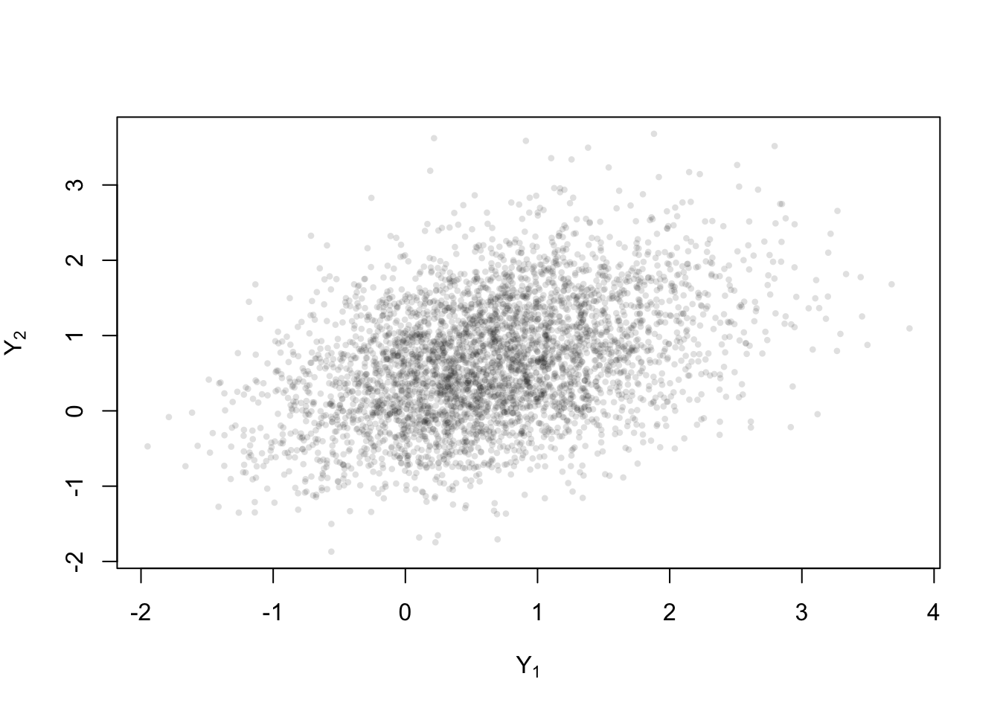
Evaluation grids
grid1 <- seq(
min(ysim2[, 1]) - 0.5 * stats::sd(ysim2[, 1]),
max(ysim2[, 1]) + 0.5 * stats::sd(ysim2[, 1]),
length.out = 121
)
grid2 <- seq(
min(ysim2[, 2]) - 0.5 * stats::sd(ysim2[, 2]),
max(ysim2[, 2]) + 0.5 * stats::sd(ysim2[, 2]),
length.out = 121
)Main analysis
All analyses below use Gaussian kernels for the marginals and product Gaussian kernels for the bivariate fits. The product kernel is
\[ K_{h_1,h_2}(t_1,t_2)=\frac{\phi(t_1/h_1)\phi(t_2/h_2)}{h_1h_2}, \]
where \(\phi\) is the standard normal density and \(h_1,h_2\) are kernel standard deviations. Every fit, including each cross-validation fold, uses maxit = 200. A fit that reaches this limit without convergence emits a warning.
Marginal density estimation
We use the notation of Braun and Stafford (2016), Section 3.1. Their EMS method uses local-constant kernel smoothing; the current degree = 2 implementation replaces that step with local quadratic regression of density heights.
Partition and EM step. Let \(R_i\) be observation \(i\)’s censoring interval, \(i=1,\ldots,n\). All interval endpoints together define cells \(Q_j\), \(j=1,\ldots,J\), with lengths \(v_j=\lVert Q_j\rVert\) and centres \(c_j\). Write \(p_j=\int_{Q_j}f(x)\,dx\) and \(\mathcal I_{ij}=\mathbf1\{Q_j\subseteq R_i\}\). Following equation (4), the iteration uses the piecewise-constant density
\[ \bar f^{(r)}(x)=\frac{\widehat p_j^{(r)}}{v_j},\quad x\in Q_j, \qquad \widehat p_j^{(0)}=\frac{v_j}{\sum_m v_m}. \]
The EM step reallocates each observation among compatible cells:
\[ M_j^{(r)}:=[\mathcal M(\widehat{\mathbf p}^{(r)})]_j =\frac1n\sum_{i=1}^n \frac{\widehat p_j^{(r)}\mathcal I_{ij}} {\sum_m\widehat p_m^{(r)}\mathcal I_{im}}. \]
Where the quadratic enters.
Braun and Stafford’s equation (5) updates the row vector by \[ \widehat{\mathbf p}^{(r+1)}=\mathcal M(\widehat{\mathbf p}^{(r)})\mathcal K_h, \] where \(\mathcal K_h\) is their kernel smoothing matrix.
Our code instead converts the EM masses to density heights \(q_j^{(r)}=M_j^{(r)}/v_j\). At each target centre \(c_k\), it fits a separate quadratic using \(t_{jk}=(c_j-c_k)/h\):
\[ \widehat{\boldsymbol\beta}^{(r)}(c_k) =\arg\min_{\boldsymbol\beta}\sum_j K_h(c_j-c_k) \left[q_j^{(r)}- \left(\beta_1+\beta_2t_{jk}+\beta_3t_{jk}^2\right)\right]^2, \qquad K_h(t)=h^{-1}\phi(t/h). \]
The term \(\beta_3t_{jk}^2\) allows local curvature. At the target, \(t=0\), so the fitted density height is the intercept \(\widehat\beta_1^{(r)}(c_k)\). Multiplying by the target-cell length gives its updated mass:
\[ \widetilde p_k^{(r+1)}=v_k\widehat\beta_1^{(r)}(c_k),\qquad \widehat p_k^{(r+1)} =\frac{[\widetilde p_k^{(r+1)}]_+} {\sum_m[\widetilde p_m^{(r+1)}]_+}, \qquad [a]_+=\max(a,0). \]
Thus the quadratic smooths the conditional density heights; the EM step still uses constant densities within cells. The regression has no extra cell-length weight. Singular fits fall back to a weighted constant, and zero-probability intervals trigger a \(10^{-8}\) mixture with uniform cell probabilities. Iteration stops when \(\max_j|\widehat p_j^{(r+1)}-\widehat p_j^{(r)}|<10^{-6}\), or warns at 200 iterations.
Convergence does not establish local-likelihood maximization.
Returned density. From the terminal masses \(\widehat{\mathbf p}\), the evaluator takes a fresh EM step and uses the form of equation (6):
\[ \widehat f_{\mathrm{out}}(x) =\sum_j\frac{[\mathcal M(\widehat{\mathbf p})]_j}{v_j} \int_{Q_j}K_h(u-x)\,du. \]
This is ordinary Gaussian reconstruction, not the fitted quadratic intercept. Its masses come from the modified iteration, so the result is not the paper’s original estimator. The curve integrates to one over the real line; its cumulative trapezoidal integral on the plotting grid is normalized to obtain \(\widehat F_j\).
# Apply exponential interval censoring with rounded endpoints to the full
# latent sample. Rounding shrinks the EMS partition (and smoothing matrices).
censored_Y <- simulate_exponential_interval_censoring(
ysim2,
seed = 20260626,
round = 0.02
)Marginal bandwidths use ten-fold CV: a coarse multiplier search followed by 10 equally spaced candidates within one unit of its winner, bounded below by 0.5. The same folds are used throughout, and the best candidate across both stages is selected. Bivariate CV uses coordinate multipliers c(0.5, 1, 2, 4, 8), without refinement or kernel rotation.
# Interval midpoints supply the starting bandwidths; CV chooses their multipliers.
# h0_ems <- c(ems_bandwidth(ysim2[, 1]), ems_bandwidth(ysim2[, 2]))
# ysim2 is the true values. We determine h0_ems using the midpoint of the interval-censored data.
h0_ems <- c(ems_bandwidth((censored_Y$left[, 1] + censored_Y$right[, 1]) / 2),
ems_bandwidth((censored_Y$left[, 2] + censored_Y$right[, 2]) / 2))
ems_grids <- list(grid1, grid2)
cv_ems <- lapply(seq_len(2), function(j) {
cv_ems_bandwidth(
L = censored_Y$left[, j],
R = censored_Y$right[, j],
grid = ems_grids[[j]],
h0 = h0_ems[j],
multipliers = c(0.5, 1, 2, 3, 4, 5, 8),
refine = TRUE,
refine_points = 10,
refine_width = 1,
n_folds = 10,
degree = 2, kernel = "gaussian",
maxit = 200,
tol = 1e-6,
seed = 20260626
)
})
ems_bw_cv_table <- do.call(rbind, lapply(seq_along(cv_ems), function(j) {
cbind(margin = j, cv_ems[[j]]$summary)
}))
ems_bw_cv_table margin multiplier h total_holdout_loglik mean_holdout_loglik
1 1 0.5000000 0.09951388 -4534.299 -453.4299
2 1 1.0000000 0.19902776 -4530.931 -453.0931
3 1 2.0000000 0.39805552 -4559.222 -455.9222
4 1 3.0000000 0.59708328 -4653.399 -465.3399
5 1 4.0000000 0.79611104 -4814.739 -481.4739
6 1 5.0000000 0.99513880 -5011.392 -501.1392
7 1 8.0000000 1.59222208 -5558.578 -555.8578
8 1 0.5000000 0.09951388 -4534.299 -453.4299
9 1 0.6666667 0.13268517 -4531.743 -453.1743
10 1 0.8333333 0.16585647 -4530.574 -453.0574
11 1 1.0000000 0.19902776 -4530.931 -453.0931
12 1 1.1666667 0.23219905 -4532.342 -453.2342
13 1 1.3333333 0.26537035 -4534.881 -453.4881
14 1 1.5000000 0.29854164 -4538.671 -453.8671
15 1 1.6666667 0.33171293 -4543.872 -454.3872
16 1 1.8333333 0.36488423 -4550.663 -455.0663
17 1 2.0000000 0.39805552 -4559.222 -455.9222
18 2 0.5000000 0.09844121 -4431.344 -443.1344
19 2 1.0000000 0.19688241 -4433.351 -443.3351
20 2 2.0000000 0.39376482 -4463.411 -446.3411
21 2 3.0000000 0.59064723 -4561.061 -456.1061
22 2 4.0000000 0.78752964 -4723.016 -472.3016
23 2 5.0000000 0.98441206 -4915.496 -491.5496
24 2 8.0000000 1.57505929 -5438.077 -543.8077
25 2 0.5000000 0.09844121 -4431.344 -443.1344
26 2 0.6111111 0.12031703 -4431.302 -443.1302
27 2 0.7222222 0.14219285 -4431.586 -443.1586
28 2 0.8333333 0.16406868 -4432.127 -443.2127
29 2 0.9444444 0.18594450 -4432.885 -443.2885
30 2 1.0555556 0.20782032 -4433.884 -443.3884
31 2 1.1666667 0.22969615 -4435.190 -443.5190
32 2 1.2777778 0.25157197 -4436.889 -443.6889
33 2 1.3888889 0.27344779 -4439.076 -443.9076
34 2 1.5000000 0.29532362 -4441.845 -444.1845
converged_folds iteration_limit_folds stage
1 10 0 coarse
2 10 0 coarse
3 10 0 coarse
4 10 0 coarse
5 10 0 coarse
6 10 0 coarse
7 10 0 coarse
8 10 0 refined
9 10 0 refined
10 10 0 refined
11 10 0 refined
12 10 0 refined
13 10 0 refined
14 10 0 refined
15 10 0 refined
16 10 0 refined
17 10 0 refined
18 10 0 coarse
19 10 0 coarse
20 10 0 coarse
21 10 0 coarse
22 10 0 coarse
23 10 0 coarse
24 10 0 coarse
25 10 0 refined
26 10 0 refined
27 10 0 refined
28 10 0 refined
29 10 0 refined
30 10 0 refined
31 10 0 refined
32 10 0 refined
33 10 0 refined
34 10 0 refined# Select the best bandwidth across the coarse and refined searches.
h_ems <- vapply(cv_ems, function(cv) {
cv$best$h
}, numeric(1))
h_ems[1] 0.1658565 0.1203170old_par <- par(mfrow = c(2, 2), mar = c(4, 4, 2, 1), mgp = c(2.2, 0.6, 0))
for (j in seq_along(cv_ems)) {
cv <- cv_ems[[j]]
folds <- cv$coarse$folds
means <- cv$coarse$summary
keep <- is.finite(folds$holdout_loglik)
plot(folds$multiplier[keep], folds$holdout_loglik[keep],
pch = 16, col = "grey60",
xlab = "bandwidth multiplier", ylab = "hold-out log-likelihood",
main = paste("Margin", j, "coarse search")
)
points(means$multiplier, means$mean_holdout_loglik,
pch = 16, col = "red", cex = 1.2
)
}
for (j in seq_along(cv_ems)) {
cv <- cv_ems[[j]]
means <- cv$refined$summary
means <- means[order(means$multiplier), ]
plot(means$multiplier, means$mean_holdout_loglik,
type = "o", pch = 16, col = "red",
xlab = "bandwidth multiplier", ylab = "mean hold-out log-likelihood",
main = paste("Margin", j, "refined search"),
ylim = range(c(means$mean_holdout_loglik, cv$best$mean_holdout_loglik), finite = TRUE)
)
abline(v = cv$best$multiplier, col = "blue", lty = 2)
points(cv$best$multiplier, cv$best$mean_holdout_loglik,
pch = 4, col = "blue", cex = 1.2, lwd = 2
)
}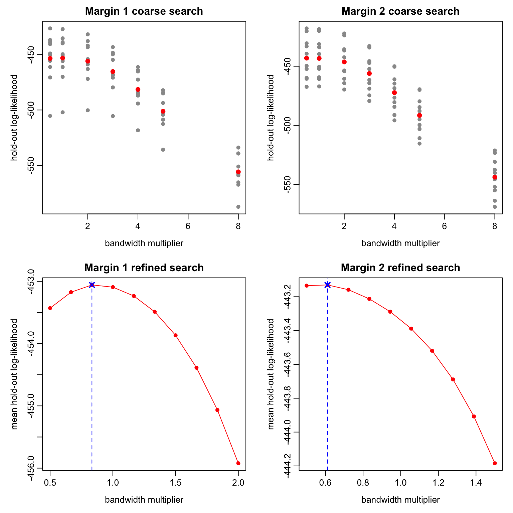
par(old_par)sun_obj <- sn::makeSUNdistr(
dp = my_sun_params,
name = "sun",
compNames = c("Y1", "Y2")
)
marg_dp <- lapply(seq_len(2), function(j) {
sn::marginalSUNdistr(sun_obj, comp = j, name = paste0("Y", j))@dp
})
marg_mult <- vapply(cv_ems, function(cv) {
cv$best$multiplier
}, numeric(1))
# Fit each margin once; reuse these fits for the later copula transformation.
marg_fits <- lapply(seq_len(2), function(j) {
ems_density(
L = censored_Y$left[, j],
R = censored_Y$right[, j],
h = h_ems[j],
degree = 2, kernel = "gaussian",
grid = ems_grids[[j]],
maxit = 200,
tol = 1e-6
)
})
# Refit the full sample at each coarse winner; its h already equals multiplier * h0.
marg_coarse_best <- lapply(cv_ems, function(cv) {
scores <- cv$coarse$summary
scores[which.max(scores$total_holdout_loglik), , drop = FALSE]
})
marg_fits_coarse <- lapply(seq_len(2), function(j) {
ems_density(
L = censored_Y$left[, j],
R = censored_Y$right[, j],
h = marg_coarse_best[[j]]$h,
degree = 2, kernel = "gaussian",
grid = ems_grids[[j]],
maxit = 200,
tol = 1e-6
)
})
old_par <- par(mfrow = c(1, 2), mar = c(4, 4, 2, 1), mgp = c(2.2, 0.6, 0))
for (j in seq_len(2)) {
ygrid <- ems_grids[[j]]
true_d <- as.numeric(sn::dsun(matrix(ygrid, ncol = 1), dp = marg_dp[[j]]))
est_d <- marg_fits[[j]]$density
coarse_d <- marg_fits_coarse[[j]]$density
plot(ygrid, true_d,
type = "l", lwd = 2, col = "black",
xlab = paste0("y", j), ylab = "density",
main = paste("Margin", j),
ylim = range(c(true_d, est_d, coarse_d), finite = TRUE)
)
lines(marg_fits[[j]]$x, est_d, col = "red", lwd = 1.5)
lines(marg_fits_coarse[[j]]$x, coarse_d, col = "blue", lwd = 1.5, lty = 2)
legend("topright",
legend = c(
"analytical",
paste0("EMS final x", signif(marg_mult[j], 3)),
paste0("EMS coarse x", signif(marg_coarse_best[[j]]$multiplier, 3))
),
col = c("black", "red", "blue"),
lwd = c(2, 1.5, 1.5), lty = c(1, 1, 2),
bty = "n", cex = 0.7
)
}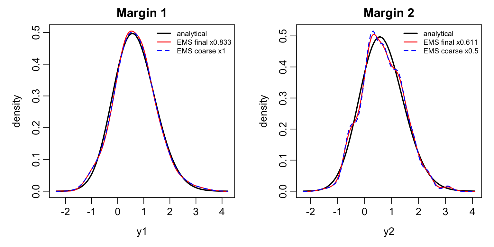
par(old_par)# These are the same fits used in the marginal comparison above.
ems_marginals <- marg_fits
vapply(ems_marginals, function(fit) fit$converged, logical(1))[1] TRUE TRUEvapply(ems_marginals, function(fit) fit$iterations, integer(1))[1] 21 29Dependence estimation on the pseudo-normal scale
# Use all observations for dependence; retain the existing endpoint rounding.
censored_Y_biv <- simulate_exponential_interval_censoring(
ysim2,
seed = 20260626,
round = 0.2
)Let \(f_Y\) be the true joint density of \((Y_1,Y_2)\), and \(F_j,f_j\) its true marginal CDFs and densities. With \(\Phi,\phi\) denoting the standard-normal CDF and density,
\[ Z_1=\Phi^{-1}\{F_1(Y_1)\},\qquad Z_2=\Phi^{-1}\{F_2(Y_2)\}. \]
The evaluation coordinates \(z_1,z_2\in\mathbb R\) are scalars, and \(f_Z(z_1,z_2)\) is a bivariate density. Each transformed observation has two coordinates; a sample is an \(n\times2\) matrix. Standard-normal margins do not imply a bivariate-normal joint distribution.
Fitting. Replace \(F_j\) by the estimated marginal CDF \(\widehat F_j\) and transform each censoring interval to
\[ \left[\Phi^{-1}\{\widehat F_j(L_{ij})\},\; \Phi^{-1}\{\widehat F_j(R_{ij})\}\right],\qquad j=1,2. \]
CDF values are clipped to \([10^{-6},1-10^{-6}]\) and transformed endpoints rounded outward with spacing \(0.2\). Denote the resulting endpoints by \(Z_{ij}^L,Z_{ij}^R\). EMS fits the rectangles \(R_i=[Z_{i1}^L,Z_{i1}^R]\times[Z_{i2}^L,Z_{i2}^R]\) using the same updates as above, with cell areas \(v_j=\lVert Q_j\rVert\). For source centre \((c_{j1},c_{j2})\) and target \((c_{k1},c_{k2})\), set \(t_1=(c_{j1}-c_{k1})/h_1\) and \(t_2=(c_{j2}-c_{k2})/h_2\). The full quadratic is
\[ \mathcal P(t_1,t_2;\boldsymbol\beta) =\beta_1+\beta_2t_1+\beta_3t_2 +\beta_4t_1^2+\beta_5t_1t_2+\beta_6t_2^2. \]
The product Gaussian kernel does not impose independence. The returned density uses the bivariate kernel reconstruction. list(x = zg, y = zg) specifies evaluation locations; censoring endpoints determine the fitting partition.
True reference. At \((z_1,z_2)\), the corresponding original-scale coordinates are
\[ y_1=F_1^{-1}\{\Phi(z_1)\},\qquad y_2=F_2^{-1}\{\Phi(z_2)\}. \]
Differentiating \(F_j(y_j)=\Phi(z_j)\) gives \(dy_j/dz_j=\phi(z_j)/f_j(y_j)\), so
\[ f_Z(z_1,z_2) =f_Y\left(F_1^{-1}\{\Phi(z_1)\},\;F_2^{-1}\{\Phi(z_2)\}\right) \frac{\phi(z_1)\phi(z_2)} {f_1\left(F_1^{-1}\{\Phi(z_1)\}\right)\, f_2\left(F_2^{-1}\{\Phi(z_2)\}\right)}. \]
The code uses the known SUN densities, numerical integration, and inverse-CDF interpolation to approximate this reference.
Copula. For \(u_1,u_2\in(0,1)\),
\[ c(u_1,u_2)=\frac{f_Z\bigl(\Phi^{-1}(u_1),\Phi^{-1}(u_2)\bigr)}{\phi\bigl(\Phi^{-1}(u_1)\bigr)\,\phi\bigl(\Phi^{-1}(u_2)\bigr)}. \]
Replacing \(f_Z\) by its estimate gives the estimated copula density, though this division does not enforce exactly uniform margins.
z_limits <- pseudo_normal_limits_from_ems(
censored_Y_biv$left,
censored_Y_biv$right,
ems_marginals,
round = 0.2
)
# Transform original-scale interval midpoints to set the coordinate-wise Gaussian bandwidths.
z_midpoints <- ems_pseudo_normal(
(censored_Y_biv$left + censored_Y_biv$right) / 2,
ems_marginals
)
gaussian_base_z <- gaussian_bandwidth_base(z_midpoints)
gaussian_base_z$h[1] 0.3013946 0.3090134gaussian_base_z$correlation[1] 0.2406026cv_ems_product_z <- cv_ems_product_bandwidth(
Lx = z_limits$lower[, 1],
Rx = z_limits$upper[, 1],
Ly = z_limits$lower[, 2],
Ry = z_limits$upper[, 2],
h0 = gaussian_base_z$h,
multipliers = c(0.5, 1, 2, 4, 8),
refine = FALSE,
exclude = rbind(c(1, 8), c(8, 1)),
n_folds = 10,
degree = 2, kernel = "gaussian",
maxit = 200,
tol = 1e-6,
seed = 20260626,
n_threads = 2
)
score_z <- formatC(cv_ems_product_z$coarse$score, format = "f", digits = 1)
score_z[is.na(cv_ems_product_z$coarse$score)] <- ""
dimnames(score_z) <- dimnames(cv_ems_product_z$coarse$score)
knitr::kable(
score_z, align = "r",
caption = "Product-Gaussian EMS: coarse ten-fold rectangle log-likelihood. Rows and columns multiply the first and second coordinate bandwidths. Excluded or failed candidates are blank."
)| direction 2 x0.5 | direction 2 x1 | direction 2 x2 | direction 2 x4 | direction 2 x8 | |
|---|---|---|---|---|---|
| direction 1 x0.5 | -6482.3 | -6503.0 | -6509.5 | -6718.3 | -7154.0 |
| direction 1 x1 | -6489.5 | -6523.7 | -6539.9 | -6748.5 | |
| direction 1 x2 | -6525.9 | -6566.4 | -6558.9 | -6786.0 | -7231.1 |
| direction 1 x4 | -6736.1 | -6774.9 | -6811.0 | -7171.1 | -7684.7 |
| direction 1 x8 | -7191.2 | -7276.1 | -7706.9 | -8223.0 |
knitr::kable(cv_ems_product_z$best, digits = 4,
caption = "Selected bandwidths: highest total CV score on the bivariate grid."
)| multiplier_1 | multiplier_2 | h1 | h2 | total_holdout_loglik | mean_holdout_loglik | converged_folds | iteration_limit_folds | stage |
|---|---|---|---|---|---|---|---|---|
| 0.5 | 0.5 | 0.1507 | 0.1545 | -6482.265 | -648.2265 | 10 | 0 | coarse |
sun_obj_z <- sn::makeSUNdistr(
dp = my_sun_params, name = "sun", compNames = c("Y1", "Y2")
)
margin_map <- lapply(seq_len(2), function(j) {
dp <- sn::marginalSUNdistr(sun_obj_z, comp = j, name = paste0("Y", j))@dp
y <- seq(-8, 8, length.out = 4001)
f <- as.numeric(sn::dsun(matrix(y, ncol = 1), dp = dp))
f[!is.finite(f) | f < 0] <- 0
inc <- diff(y) * (head(f, -1) + tail(f, -1)) / 2
cdf <- c(0, cumsum(inc))
cdf <- cdf / max(cdf)
keep <- !duplicated(cdf)
list(
dens = stats::approxfun(y, f, rule = 2),
inv = stats::approxfun(cdf[keep], y[keep], rule = 2, yleft = min(y), yright = max(y))
)
})
zg <- seq(-3.5, 3.5, length.out = 57)
zz <- expand.grid(z1 = zg, z2 = zg)
y1 <- margin_map[[1]]$inv(stats::pnorm(zz$z1))
y2 <- margin_map[[2]]$inv(stats::pnorm(zz$z2))
# Change-of-variables factor from the true SUN marginals to normal scores.
jac <- stats::dnorm(zz$z1) * stats::dnorm(zz$z2) /
pmax(margin_map[[1]]$dens(y1) * margin_map[[2]]$dens(y2), 1e-12)
true_z <- matrix(
as.numeric(sn::dsun(cbind(y1, y2), dp = my_sun_params)) * jac,
nrow = length(zg), ncol = length(zg)
)
# The product Gaussian kernel has no rotation; CV selects a multiplier for each coordinate.
product_best_z <- cv_ems_product_z$best
copula_fit <- ems_density(
L = z_limits$lower[, 1],
R = z_limits$upper[, 1],
Ly = z_limits$lower[, 2],
Ry = z_limits$upper[, 2],
h = c(product_best_z$h1, product_best_z$h2),
degree = 2,
kernel = "gaussian",
grid = list(x = zg, y = zg),
maxit = 200,
tol = 1e-6,
n_threads = 2
)
# This is a density on the normal-score scale; divide by normal marginals
# below to obtain a copula density on the unit square.
est_z <- pmax(copula_fit$density, 0)
ug <- seq(0.01, 0.99, length.out = 41)
uu <- expand.grid(u1 = ug, u2 = ug)
y1u <- margin_map[[1]]$inv(uu$u1)
y2u <- margin_map[[2]]$inv(uu$u2)
true_c <- matrix(
as.numeric(sn::dsun(cbind(y1u, y2u), dp = my_sun_params)) /
pmax(margin_map[[1]]$dens(y1u) * margin_map[[2]]$dens(y2u), 1e-12),
nrow = length(ug), ncol = length(ug)
)
est_c <- matrix(
bilinear(zg, zg, est_z, stats::qnorm(uu$u1), stats::qnorm(uu$u2)) /
pmax(stats::dnorm(stats::qnorm(uu$u1)) * stats::dnorm(stats::qnorm(uu$u2)), 1e-8),
nrow = length(ug), ncol = length(ug)
)
true_c[!is.finite(true_c) | true_c < 0] <- 0
est_c[!is.finite(est_c) | est_c < 0] <- 0
hdr_cuts <- c(0.2, 0.5, 0.8, 0.9, 0.95, 0.99, 0.999)
hdr_labels <- c("20%", "50%", "80%", "90%", "95%", "99%", "99.9%", ">99.9%")
hdr_cols <- c(
"#67000d", "#a50f15", "#de2d26", "#fb6a4a",
"#fc9272", "#fcbba1", "#fee0d2", "#fff5f0"
)
panel_titles <- c(
"True SUN, normal scale",
paste0(
"EMS, normal scale, x", signif(product_best_z$multiplier_1, 3),
" x x", signif(product_best_z$multiplier_2, 3)
),
"True copula",
paste0(
"EMS copula, x", signif(product_best_z$multiplier_1, 3),
" x x", signif(product_best_z$multiplier_2, 3)
)
)
panel_x <- list(zg, zg, ug, ug)
panel_dens <- list(true_z, est_z, true_c, est_c)
normal_ticks <- c(-3.5, -2, 0, 2, 3.5)
old_par <- par(mfrow = c(2, 3), mar = c(3, 2, 2, 1), mgp = c(2, 0.5, 0))
for (j in seq_along(panel_dens)) {
image(panel_x[[j]], panel_x[[j]], hdr_code(panel_dens[[j]], panel_x[[j]], panel_x[[j]], hdr_cuts),
col = hdr_cols,
zlim = c(0.5, length(hdr_cols) + 0.5),
xlim = if (j <= 2) range(panel_x[[j]]) else c(0, 1),
ylim = if (j <= 2) range(panel_x[[j]]) else c(0, 1),
xaxt = if (j <= 2) "n" else "s",
yaxt = if (j <= 2) "n" else "s",
xlab = panel_titles[j]
)
if (j <= 2) {
axis(1, at = normal_ticks)
axis(2, at = normal_ticks)
}
if (j %% 2 == 1) {
legend("topleft",
legend = hdr_labels, fill = hdr_cols,
bty = "n", cex = 0.55, title = "mass"
)
}
if (j %% 2 == 0) {
# Match probability contents, not density heights, between true and EMS.
contour_probs <- c(0.2, 0.5, 0.8, 0.95)
true_levels <- vapply(contour_probs, hdr_level, numeric(1),
dens = panel_dens[[j - 1]], x = panel_x[[j]], y = panel_x[[j]]
)
est_levels <- vapply(contour_probs, hdr_level, numeric(1),
dens = panel_dens[[j]], x = panel_x[[j]], y = panel_x[[j]]
)
plot(range(panel_x[[j]]), range(panel_x[[j]]),
type = "n",
xlim = if (j <= 2) range(panel_x[[j]]) else c(0, 1),
ylim = if (j <= 2) range(panel_x[[j]]) else c(0, 1),
xaxt = if (j <= 2) "n" else "s",
yaxt = if (j <= 2) "n" else "s",
xlab = "20%, 50%, 80%, 95% contours", ylab = ""
)
if (j <= 2) {
axis(1, at = normal_ticks)
axis(2, at = normal_ticks)
}
contour(panel_x[[j]], panel_x[[j]], panel_dens[[j - 1]],
levels = sort(true_levels),
labels = paste0(100 * contour_probs[order(true_levels)], "%"),
drawlabels = TRUE, labcex = 0.6, col = "black", add = TRUE
)
contour(panel_x[[j]], panel_x[[j]], panel_dens[[j]],
levels = sort(est_levels),
drawlabels = FALSE, col = "red", add = TRUE
)
legend("bottomright", legend = c("True", "EMS"),
col = c("black", "red"), lty = 1, bty = "n", cex = 0.65
)
}
}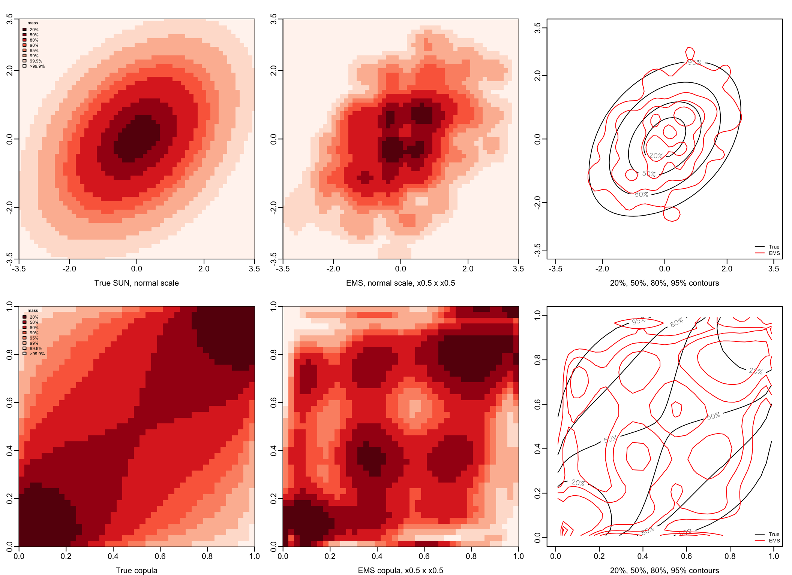
par(old_par)Joint density reconstruction
The estimated joint density on the original scale is reconstructed from \(\widehat f_Z(z_1,z_2)\) and the two EMS marginals. With \(z_j=\Phi^{-1}\{\widehat F_j(y_j)\}\) for \(j=1,2\),
\[ \widehat f_Y(y_1,y_2)=\widehat f_Z(z_1,z_2)\, \frac{\widehat f_1(y_1)\widehat f_2(y_2)}{\phi(z_1)\phi(z_2)}. \]
Marginal densities and CDFs share the same grid normalization; \(\widehat f_Z\) is evaluated by bilinear interpolation. Marginal transformations remain fixed during bivariate CV rather than being refitted within folds.
# Normalize the marginal curves consistently with the CDFs used by qnorm.
marginal_on_scale <- lapply(ems_marginals, function(fit) {
grid <- fit$x
dens <- pmax(as.numeric(fit$density), 0)
total <- sum(diff(grid) * (head(dens, -1) + tail(dens, -1)) / 2)
if (!is.finite(total) || total <= 0) {
total <- 1
}
list(
cdf = ems_monotone_cdf(fit),
dens = stats::approxfun(grid, dens / total, rule = 2)
)
})
xg <- seq(min(ysim2[, 1]), max(ysim2[, 1]), length.out = 50)
yg <- seq(min(ysim2[, 2]), max(ysim2[, 2]), length.out = 50)
yy <- expand.grid(y1 = xg, y2 = yg)
z1 <- stats::qnorm(clamp_probability(marginal_on_scale[[1]]$cdf(yy$y1)))
z2 <- stats::qnorm(clamp_probability(marginal_on_scale[[2]]$cdf(yy$y2)))
copula_yz <- bilinear(zg, zg, est_z, z1, z2)
# Undo the normal-score transformation: multiply by f1*f2 / (phi1*phi2).
rebuilt <- copula_yz *
marginal_on_scale[[1]]$dens(yy$y1) *
marginal_on_scale[[2]]$dens(yy$y2) /
pmax(stats::dnorm(z1) * stats::dnorm(z2), 1e-8)
rebuilt[!is.finite(rebuilt) | rebuilt < 0] <- 0
rebuilt_density <- matrix(rebuilt, nrow = length(xg), ncol = length(yg))
sun_density <- matrix(
sn::dsun(as.matrix(yy), dp = my_sun_params),
nrow = length(xg),
ncol = length(yg)
)
hdr_cuts <- c(0.2, 0.5, 0.8, 0.9, 0.95, 0.99, 0.999)
hdr_labels <- c("20%", "50%", "80%", "90%", "95%", "99%", "99.9%", ">99.9%")
hdr_cols <- c(
"#67000d", "#a50f15", "#de2d26", "#fb6a4a",
"#fc9272", "#fcbba1", "#fee0d2", "#fff5f0"
)
contour_probs <- c(0.2, 0.5, 0.8, 0.95)
sun_levels <- vapply(contour_probs, hdr_level, numeric(1), dens = sun_density, x = xg, y = yg)
rebuilt_levels <- vapply(
contour_probs, hdr_level, numeric(1),
dens = rebuilt_density, x = xg, y = yg
)
old_par <- par(mfrow = c(1, 3), mar = c(3, 2, 2, 1), mgp = c(2, 0.5, 0))
image(xg, yg, hdr_code(sun_density, xg, yg, hdr_cuts),
col = hdr_cols,
zlim = c(0.5, length(hdr_cols) + 0.5),
xlab = "True SUN(2,2) density"
)
legend("topleft",
legend = hdr_labels, fill = hdr_cols,
bty = "n", cex = 0.55, title = "mass"
)
image(xg, yg, hdr_code(rebuilt_density, xg, yg, hdr_cuts),
col = hdr_cols,
zlim = c(0.5, length(hdr_cols) + 0.5),
xlab = "Copula and marginals"
)
plot(range(xg), range(yg),
type = "n",
xlab = "20%, 50%, 80%, 95% contours",
ylab = ""
)
contour(xg, yg, sun_density,
levels = sort(sun_levels),
labels = paste0(100 * contour_probs[order(sun_levels)], "%"),
drawlabels = TRUE,
labcex = 0.6,
col = "black",
add = TRUE
)
contour(xg, yg, rebuilt_density,
levels = sort(rebuilt_levels),
drawlabels = FALSE,
col = "red",
add = TRUE
)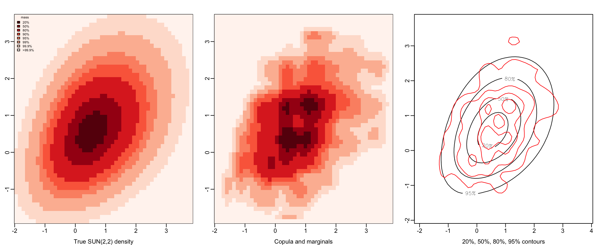
par(old_par)Light censoring
Both marginal densities and dependence are estimated from all 4,000 simulated observations under light censoring. Each exponential half-width is scaled by \(0.25\), and endpoints are rounded outward on a grid of spacing \(0.05\). Marginal cross-validation is repeated on the full sample of narrower intervals.
Marginal density estimation
censored_Y_light <- simulate_exponential_interval_censoring(
ysim2,
seed = 20260626,
round = 0.05,
width_scale = 0.25
)
# Marginal and dependence fits share the same full light-censoring sample.
censored_Y_light_biv <- censored_Y_light
rbind(
heavy = colMeans(censored_Y_biv$right - censored_Y_biv$left),
light = colMeans(censored_Y_light_biv$right - censored_Y_light_biv$left)
) [,1] [,2]
heavy 1.8155000 1.8361000
light 0.4534625 0.4596625# Both marginal fits use all 4,000 light-censored observations.
# Use the light-censoring interval midpoints for the starting marginal bandwidths.
h0_light <- c(
ems_bandwidth((censored_Y_light$left[, 1] + censored_Y_light$right[, 1]) / 2),
ems_bandwidth((censored_Y_light$left[, 2] + censored_Y_light$right[, 2]) / 2)
)
cv_ems_light <- lapply(seq_len(2), function(j) {
cv_ems_bandwidth(
L = censored_Y_light$left[, j],
R = censored_Y_light$right[, j],
grid = list(grid1, grid2)[[j]],
h0 = h0_light[j],
multipliers = c(0.5, 1, 2, 3, 4, 5, 8),
refine = TRUE,
refine_points = 10,
refine_width = 1,
n_folds = 10,
degree = 2, kernel = "gaussian",
maxit = 200,
tol = 1e-6,
seed = 20260626
)
})Warning: EMS marginal CV (degree 2): 5 of 70 fold fits reached maxit = 200
without convergence. See the iteration-limit diagnostics; these EMS scores
still use the last iterate.light_bw_cv_table <- do.call(rbind, lapply(seq_along(cv_ems_light), function(j) {
cbind(margin = j, cv_ems_light[[j]]$summary)
}))
light_bw_cv_table margin multiplier h total_holdout_loglik mean_holdout_loglik
1 1 0.5000000 0.08310626 -8832.007 -883.2007
2 1 1.0000000 0.16621252 -8829.272 -882.9272
3 1 2.0000000 0.33242504 -8847.340 -884.7340
4 1 3.0000000 0.49863756 -8914.322 -891.4322
5 1 4.0000000 0.66485007 -9039.706 -903.9706
6 1 5.0000000 0.83106259 -9213.053 -921.3053
7 1 8.0000000 1.32970015 -9816.180 -981.6180
8 1 0.5000000 0.08310626 -8832.007 -883.2007
9 1 0.6666667 0.11080835 -8829.936 -882.9936
10 1 0.8333333 0.13851043 -8829.077 -882.9077
11 1 1.0000000 0.16621252 -8829.272 -882.9272
12 1 1.1666667 0.19391461 -8829.762 -882.9762
13 1 1.3333333 0.22161669 -8831.150 -883.1150
14 1 1.5000000 0.24931878 -8833.413 -883.3413
15 1 1.6666667 0.27702086 -8836.812 -883.6812
16 1 1.8333333 0.30472295 -8841.431 -884.1431
17 1 2.0000000 0.33242504 -8847.340 -884.7340
18 2 0.5000000 0.08228025 -8737.755 -873.7755
19 2 1.0000000 0.16456049 -8733.542 -873.3542
20 2 2.0000000 0.32912098 -8753.121 -875.3121
21 2 3.0000000 0.49368147 -8825.204 -882.5204
22 2 4.0000000 0.65824196 -8954.284 -895.4284
23 2 5.0000000 0.82280245 -9126.755 -912.6755
24 2 8.0000000 1.31648392 -9709.186 -970.9186
25 2 0.5000000 0.08228025 -8737.755 -873.7755
26 2 0.6666667 0.10970699 -8735.149 -873.5149
27 2 0.8333333 0.13713374 -8733.912 -873.3912
28 2 1.0000000 0.16456049 -8733.542 -873.3542
29 2 1.1666667 0.19198724 -8734.012 -873.4012
30 2 1.3333333 0.21941399 -8735.427 -873.5427
31 2 1.5000000 0.24684074 -8737.935 -873.7935
32 2 1.6666667 0.27426748 -8741.642 -874.1642
33 2 1.8333333 0.30169423 -8746.661 -874.6661
34 2 2.0000000 0.32912098 -8753.121 -875.3121
converged_folds iteration_limit_folds stage
1 10 0 coarse
2 10 0 coarse
3 10 0 coarse
4 6 4 coarse
5 9 1 coarse
6 10 0 coarse
7 10 0 coarse
8 10 0 refined
9 10 0 refined
10 10 0 refined
11 10 0 refined
12 10 0 refined
13 10 0 refined
14 10 0 refined
15 10 0 refined
16 10 0 refined
17 10 0 refined
18 10 0 coarse
19 10 0 coarse
20 10 0 coarse
21 10 0 coarse
22 10 0 coarse
23 10 0 coarse
24 10 0 coarse
25 10 0 refined
26 10 0 refined
27 10 0 refined
28 10 0 refined
29 10 0 refined
30 10 0 refined
31 10 0 refined
32 10 0 refined
33 10 0 refined
34 10 0 refinedold_par <- par(mfrow = c(2, 2), mar = c(4, 4, 2, 1), mgp = c(2.2, 0.6, 0))
for (j in seq_along(cv_ems_light)) {
cv <- cv_ems_light[[j]]
folds <- cv$coarse$folds
means <- cv$coarse$summary
keep <- is.finite(folds$holdout_loglik)
plot(folds$multiplier[keep], folds$holdout_loglik[keep],
pch = 16, col = "grey60",
xlab = "bandwidth multiplier", ylab = "hold-out log-likelihood",
main = paste("Margin", j, "coarse search")
)
points(means$multiplier, means$mean_holdout_loglik,
pch = 16, col = "red", cex = 1.2
)
}
for (j in seq_along(cv_ems_light)) {
cv <- cv_ems_light[[j]]
means <- cv$refined$summary
means <- means[order(means$multiplier), ]
plot(means$multiplier, means$mean_holdout_loglik,
type = "o", pch = 16, col = "red",
xlab = "bandwidth multiplier", ylab = "mean hold-out log-likelihood",
main = paste("Margin", j, "refined search"),
ylim = range(c(means$mean_holdout_loglik, cv$best$mean_holdout_loglik), finite = TRUE)
)
abline(v = cv$best$multiplier, col = "blue", lty = 2)
points(cv$best$multiplier, cv$best$mean_holdout_loglik,
pch = 4, col = "blue", cex = 1.2, lwd = 2
)
}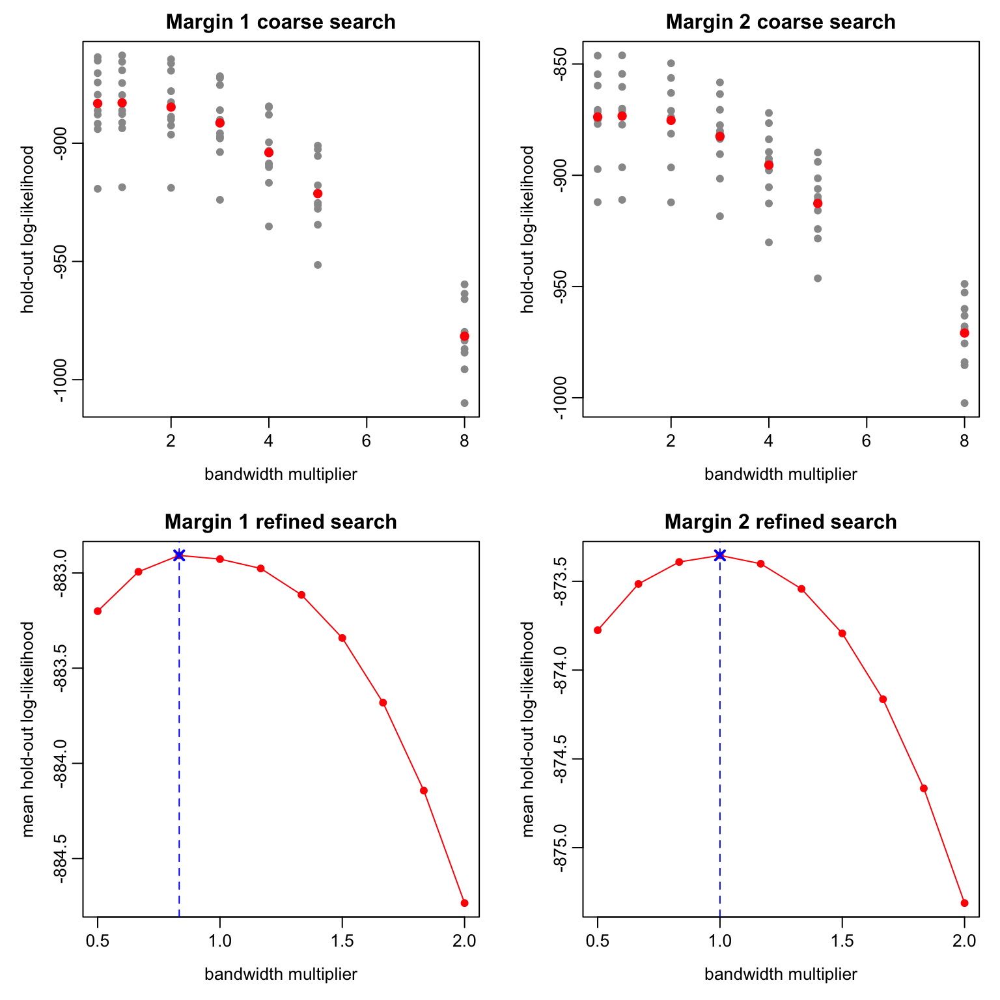
par(old_par)The light-censored margins are fit at their cross-validation bandwidths. Those distribution functions map the intervals to the pseudo-normal scale, the local-quadratic product-Gaussian dependence density is estimated there, and the joint density on the original scale is rebuilt from that copula and the two marginals.
h_ems_light <- vapply(cv_ems_light, function(cv) {
cv$best$h
}, numeric(1))
ems_marginals_light <- lapply(seq_len(2), function(j) {
ems_density(
L = censored_Y_light$left[, j],
R = censored_Y_light$right[, j],
h = h_ems_light[j],
degree = 2, kernel = "gaussian",
grid = list(grid1, grid2)[[j]],
maxit = 200,
tol = 1e-6
)
})
h_ems_light[1] 0.1385104 0.1645605sun_obj_light <- sn::makeSUNdistr(
dp = my_sun_params,
name = "sun",
compNames = c("Y1", "Y2")
)
marg_dp_light <- lapply(seq_len(2), function(j) {
sn::marginalSUNdistr(sun_obj_light, comp = j, name = paste0("Y", j))@dp
})
marg_mult_light <- vapply(cv_ems_light, function(cv) {
cv$best$multiplier
}, numeric(1))
# Coarse winners use the same data and fitting settings as the final red curves.
marg_coarse_best_light <- lapply(cv_ems_light, function(cv) {
scores <- cv$coarse$summary
scores[which.max(scores$total_holdout_loglik), , drop = FALSE]
})
marg_fits_coarse_light <- lapply(seq_len(2), function(j) {
ems_density(
L = censored_Y_light$left[, j],
R = censored_Y_light$right[, j],
h = marg_coarse_best_light[[j]]$h,
degree = 2, kernel = "gaussian",
grid = list(grid1, grid2)[[j]],
maxit = 200,
tol = 1e-6
)
})
old_par <- par(mfrow = c(1, 2), mar = c(4, 4, 2, 1), mgp = c(2.2, 0.6, 0))
for (j in seq_len(2)) {
ygrid <- list(grid1, grid2)[[j]]
true_d <- as.numeric(sn::dsun(matrix(ygrid, ncol = 1), dp = marg_dp_light[[j]]))
est_d <- ems_marginals_light[[j]]$density
coarse_d <- marg_fits_coarse_light[[j]]$density
plot(ygrid, true_d,
type = "l", lwd = 2, col = "black",
xlab = paste0("y", j), ylab = "density",
main = paste("Margin", j),
ylim = range(c(true_d, est_d, coarse_d), finite = TRUE)
)
lines(ems_marginals_light[[j]]$x, est_d, col = "red", lwd = 1.5)
lines(marg_fits_coarse_light[[j]]$x, coarse_d, col = "blue", lwd = 1.5, lty = 2)
legend("topright",
legend = c(
"analytical",
paste0("EMS final x", signif(marg_mult_light[j], 3)),
paste0("EMS coarse x", signif(marg_coarse_best_light[[j]]$multiplier, 3))
),
col = c("black", "red", "blue"),
lwd = c(2, 1.5, 1.5), lty = c(1, 1, 2),
bty = "n", cex = 0.7
)
}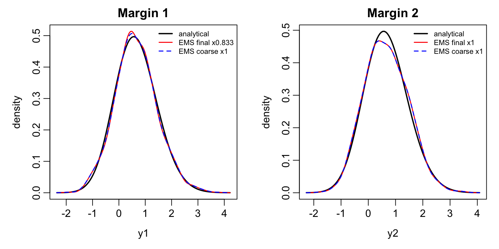
par(old_par)Dependence estimation on the pseudo-normal scale
z_limits_light <- pseudo_normal_limits_from_ems(
censored_Y_light_biv$left,
censored_Y_light_biv$right,
ems_marginals_light,
round = 0.2
)
# Use the same midpoint-then-transform calculation for the light intervals.
z_midpoints_light <- ems_pseudo_normal(
(censored_Y_light_biv$left + censored_Y_light_biv$right) / 2,
ems_marginals_light
)
gaussian_base_z_light <- gaussian_bandwidth_base(z_midpoints_light)
cv_ems_product_z_light <- cv_ems_product_bandwidth(
Lx = z_limits_light$lower[, 1],
Rx = z_limits_light$upper[, 1],
Ly = z_limits_light$lower[, 2],
Ry = z_limits_light$upper[, 2],
h0 = gaussian_base_z_light$h,
multipliers = c(0.5, 1, 2, 4, 8),
refine = FALSE,
exclude = rbind(c(1, 8), c(8, 1)),
n_folds = 10,
degree = 2, kernel = "gaussian",
maxit = 200,
tol = 1e-6,
seed = 20260626,
n_threads = 2
)
score_z_light <- formatC(cv_ems_product_z_light$coarse$score, format = "f", digits = 1)
score_z_light[is.na(cv_ems_product_z_light$coarse$score)] <- ""
dimnames(score_z_light) <- dimnames(cv_ems_product_z_light$coarse$score)
knitr::kable(
score_z_light, align = "r",
caption = "Light-censoring product-Gaussian EMS: coarse ten-fold rectangle log-likelihood. Rows and columns multiply the first and second coordinate bandwidths. Excluded or failed candidates are blank."
)| direction 2 x0.5 | direction 2 x1 | direction 2 x2 | direction 2 x4 | direction 2 x8 | |
|---|---|---|---|---|---|
| direction 1 x0.5 | -14257.7 | -14241.0 | -14205.1 | -14266.4 | -14750.5 |
| direction 1 x1 | -14147.2 | -14104.9 | -14151.0 | -14274.3 | |
| direction 1 x2 | -14143.9 | -14139.7 | -14158.0 | -14259.2 | -14778.3 |
| direction 1 x4 | -14189.9 | -14230.5 | -14242.2 | -14358.0 | -15018.6 |
| direction 1 x8 | -14739.7 | -14773.6 | -15019.7 | -15911.7 |
knitr::kable(cv_ems_product_z_light$best, digits = 4,
caption = "Selected bandwidths: highest total CV score on the bivariate grid."
)| multiplier_1 | multiplier_2 | h1 | h2 | total_holdout_loglik | mean_holdout_loglik | converged_folds | iteration_limit_folds | stage | |
|---|---|---|---|---|---|---|---|---|---|
| 7 | 1 | 1 | 0.2516 | 0.25 | -14104.93 | -1410.493 | 10 | 0 | coarse |
sun_obj_z_light <- sn::makeSUNdistr(
dp = my_sun_params, name = "sun", compNames = c("Y1", "Y2")
)
margin_map_light <- lapply(seq_len(2), function(j) {
dp <- sn::marginalSUNdistr(sun_obj_z_light, comp = j, name = paste0("Y", j))@dp
y <- seq(-8, 8, length.out = 4001)
f <- as.numeric(sn::dsun(matrix(y, ncol = 1), dp = dp))
f[!is.finite(f) | f < 0] <- 0
inc <- diff(y) * (head(f, -1) + tail(f, -1)) / 2
cdf <- c(0, cumsum(inc))
cdf <- cdf / max(cdf)
keep <- !duplicated(cdf)
list(
dens = stats::approxfun(y, f, rule = 2),
inv = stats::approxfun(cdf[keep], y[keep], rule = 2, yleft = min(y), yright = max(y))
)
})
product_best_z_light <- cv_ems_product_z_light$best
zg_light <- seq(-2.5, 2.5, length.out = 41)
zz_light <- expand.grid(z1 = zg_light, z2 = zg_light)
y1_light <- margin_map_light[[1]]$inv(stats::pnorm(zz_light$z1))
y2_light <- margin_map_light[[2]]$inv(stats::pnorm(zz_light$z2))
jac_light <- stats::dnorm(zz_light$z1) * stats::dnorm(zz_light$z2) /
pmax(margin_map_light[[1]]$dens(y1_light) * margin_map_light[[2]]$dens(y2_light), 1e-12)
true_z_light <- matrix(
as.numeric(sn::dsun(cbind(y1_light, y2_light), dp = my_sun_params)) * jac_light,
nrow = length(zg_light), ncol = length(zg_light)
)
copula_fit_light <- ems_density(
L = z_limits_light$lower[, 1],
R = z_limits_light$upper[, 1],
Ly = z_limits_light$lower[, 2],
Ry = z_limits_light$upper[, 2],
h = c(product_best_z_light$h1, product_best_z_light$h2),
degree = 2,
kernel = "gaussian",
grid = list(x = zg_light, y = zg_light),
maxit = 200,
tol = 1e-6,
n_threads = 2
)
est_z_light <- pmax(copula_fit_light$density, 0)
# Transform the fitted normal-score density onto the unit square for comparison.
ug_light <- seq(0.01, 0.99, length.out = 41)
uu_light <- expand.grid(u1 = ug_light, u2 = ug_light)
y1u_light <- margin_map_light[[1]]$inv(uu_light$u1)
y2u_light <- margin_map_light[[2]]$inv(uu_light$u2)
true_c_light <- matrix(
as.numeric(sn::dsun(cbind(y1u_light, y2u_light), dp = my_sun_params)) /
pmax(margin_map_light[[1]]$dens(y1u_light) * margin_map_light[[2]]$dens(y2u_light), 1e-12),
nrow = length(ug_light), ncol = length(ug_light)
)
u_z1_light <- stats::qnorm(uu_light$u1)
u_z2_light <- stats::qnorm(uu_light$u2)
est_c_light <- matrix(
bilinear(zg_light, zg_light, est_z_light, u_z1_light, u_z2_light) /
pmax(stats::dnorm(u_z1_light) * stats::dnorm(u_z2_light), 1e-8),
nrow = length(ug_light), ncol = length(ug_light)
)
true_c_light[!is.finite(true_c_light) | true_c_light < 0] <- 0
est_c_light[!is.finite(est_c_light) | est_c_light < 0] <- 0
hdr_cuts <- c(0.2, 0.5, 0.8, 0.9, 0.95, 0.99, 0.999)
hdr_labels <- c("20%", "50%", "80%", "90%", "95%", "99%", "99.9%", ">99.9%")
hdr_cols <- c(
"#67000d", "#a50f15", "#de2d26", "#fb6a4a",
"#fc9272", "#fcbba1", "#fee0d2", "#fff5f0"
)
panel_titles <- c(
"True SUN, normal scale",
paste0(
"EMS, normal scale, x", signif(product_best_z_light$multiplier_1, 3),
" x x", signif(product_best_z_light$multiplier_2, 3)
),
"True copula",
paste0(
"EMS copula, x", signif(product_best_z_light$multiplier_1, 3),
" x x", signif(product_best_z_light$multiplier_2, 3)
)
)
panel_x <- list(zg_light, zg_light, ug_light, ug_light)
panel_dens <- list(true_z_light, est_z_light, true_c_light, est_c_light)
normal_ticks <- c(-2.5, -1, 0, 1, 2.5)
old_par <- par(mfrow = c(2, 3), mar = c(3, 2, 2, 1), mgp = c(2, 0.5, 0))
for (j in seq_along(panel_dens)) {
image(panel_x[[j]], panel_x[[j]], hdr_code(panel_dens[[j]], panel_x[[j]], panel_x[[j]], hdr_cuts),
col = hdr_cols,
zlim = c(0.5, length(hdr_cols) + 0.5),
xlim = if (j <= 2) range(panel_x[[j]]) else c(0, 1),
ylim = if (j <= 2) range(panel_x[[j]]) else c(0, 1),
xaxt = if (j <= 2) "n" else "s",
yaxt = if (j <= 2) "n" else "s",
xlab = panel_titles[j]
)
if (j <= 2) {
axis(1, at = normal_ticks)
axis(2, at = normal_ticks)
}
if (j %% 2 == 1) {
legend("topleft",
legend = hdr_labels, fill = hdr_cols,
bty = "n", cex = 0.55, title = "mass"
)
}
if (j %% 2 == 0) {
# Match probability contents, not density heights, between true and EMS.
contour_probs <- c(0.2, 0.5, 0.8, 0.95)
true_levels <- vapply(contour_probs, hdr_level, numeric(1),
dens = panel_dens[[j - 1]], x = panel_x[[j]], y = panel_x[[j]]
)
est_levels <- vapply(contour_probs, hdr_level, numeric(1),
dens = panel_dens[[j]], x = panel_x[[j]], y = panel_x[[j]]
)
plot(range(panel_x[[j]]), range(panel_x[[j]]),
type = "n",
xlim = if (j <= 2) range(panel_x[[j]]) else c(0, 1),
ylim = if (j <= 2) range(panel_x[[j]]) else c(0, 1),
xaxt = if (j <= 2) "n" else "s",
yaxt = if (j <= 2) "n" else "s",
xlab = "20%, 50%, 80%, 95% contours", ylab = ""
)
if (j <= 2) {
axis(1, at = normal_ticks)
axis(2, at = normal_ticks)
}
contour(panel_x[[j]], panel_x[[j]], panel_dens[[j - 1]],
levels = sort(true_levels),
labels = paste0(100 * contour_probs[order(true_levels)], "%"),
drawlabels = TRUE, labcex = 0.6, col = "black", add = TRUE
)
contour(panel_x[[j]], panel_x[[j]], panel_dens[[j]],
levels = sort(est_levels),
drawlabels = FALSE, col = "red", add = TRUE
)
legend("bottomright", legend = c("True", "EMS"),
col = c("black", "red"), lty = 1, bty = "n", cex = 0.65
)
}
}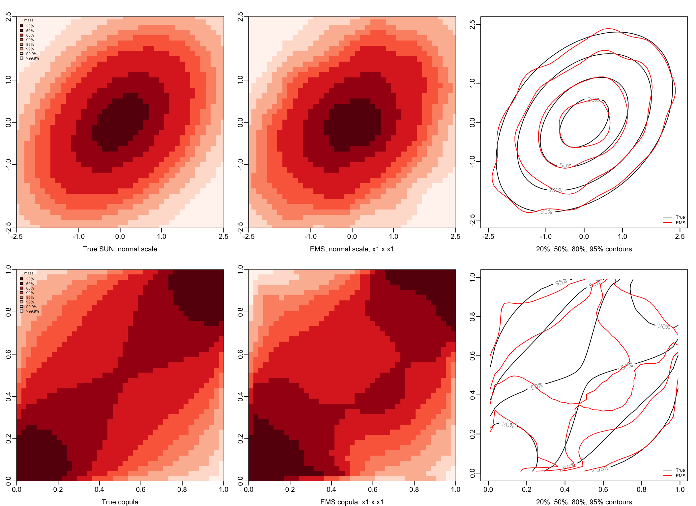
par(old_par)Joint density reconstruction
marginal_on_scale_light <- lapply(ems_marginals_light, function(fit) {
grid <- fit$x
dens <- pmax(as.numeric(fit$density), 0)
total <- sum(diff(grid) * (head(dens, -1) + tail(dens, -1)) / 2)
if (!is.finite(total) || total <= 0) {
total <- 1
}
list(
cdf = ems_monotone_cdf(fit),
dens = stats::approxfun(grid, dens / total, rule = 2)
)
})
xg <- seq(min(ysim2[, 1]), max(ysim2[, 1]), length.out = 50)
yg <- seq(min(ysim2[, 2]), max(ysim2[, 2]), length.out = 50)
yy <- expand.grid(y1 = xg, y2 = yg)
z1 <- stats::qnorm(clamp_probability(marginal_on_scale_light[[1]]$cdf(yy$y1)))
z2 <- stats::qnorm(clamp_probability(marginal_on_scale_light[[2]]$cdf(yy$y2)))
copula_yz <- bilinear(zg_light, zg_light, est_z_light, z1, z2)
# Undo the normal-score transformation: multiply by f1*f2 / (phi1*phi2).
rebuilt <- copula_yz *
marginal_on_scale_light[[1]]$dens(yy$y1) *
marginal_on_scale_light[[2]]$dens(yy$y2) /
pmax(stats::dnorm(z1) * stats::dnorm(z2), 1e-8)
rebuilt[!is.finite(rebuilt) | rebuilt < 0] <- 0
rebuilt_density <- matrix(rebuilt, nrow = length(xg), ncol = length(yg))
sun_density <- matrix(
sn::dsun(as.matrix(yy), dp = my_sun_params),
nrow = length(xg),
ncol = length(yg)
)
hdr_cuts <- c(0.2, 0.5, 0.8, 0.9, 0.95, 0.99, 0.999)
hdr_labels <- c("20%", "50%", "80%", "90%", "95%", "99%", "99.9%", ">99.9%")
hdr_cols <- c(
"#67000d", "#a50f15", "#de2d26", "#fb6a4a",
"#fc9272", "#fcbba1", "#fee0d2", "#fff5f0"
)
contour_probs <- c(0.2, 0.5, 0.8, 0.95)
sun_levels <- vapply(contour_probs, hdr_level, numeric(1), dens = sun_density, x = xg, y = yg)
rebuilt_levels <- vapply(
contour_probs, hdr_level, numeric(1),
dens = rebuilt_density, x = xg, y = yg
)
old_par <- par(mfrow = c(1, 3), mar = c(3, 2, 2, 1), mgp = c(2, 0.5, 0))
image(xg, yg, hdr_code(sun_density, xg, yg, hdr_cuts),
col = hdr_cols,
zlim = c(0.5, length(hdr_cols) + 0.5),
xlab = "True SUN(2,2) density"
)
legend("topleft",
legend = hdr_labels, fill = hdr_cols,
bty = "n", cex = 0.55, title = "mass"
)
image(xg, yg, hdr_code(rebuilt_density, xg, yg, hdr_cuts),
col = hdr_cols,
zlim = c(0.5, length(hdr_cols) + 0.5),
xlab = paste0(
"Copula and marginals, x", signif(product_best_z_light$multiplier_1, 3),
" x x", signif(product_best_z_light$multiplier_2, 3)
)
)
plot(range(xg), range(yg),
type = "n",
xlab = "20%, 50%, 80%, 95% contours",
ylab = ""
)
contour(xg, yg, sun_density,
levels = sort(sun_levels),
labels = paste0(100 * contour_probs[order(sun_levels)], "%"),
drawlabels = TRUE,
labcex = 0.6,
col = "black",
add = TRUE
)
contour(xg, yg, rebuilt_density,
levels = sort(rebuilt_levels),
drawlabels = FALSE,
col = "red",
add = TRUE
)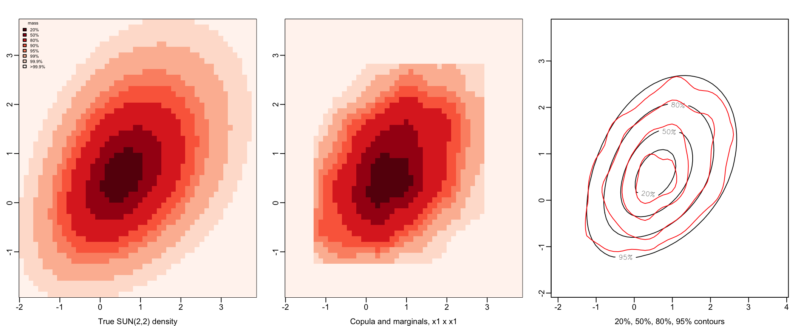
par(old_par)Local-constant EMS comparison
The preceding analyses use a local-quadratic density smoother with Gaussian weights. Here, local-constant EMS fits the same samples under heavy and light censoring, with its own marginal and product-Gaussian bandwidth searches. Marginal searches retain the coarse grid and local refinement above. Bivariate searches use c(0.5, 1, 2, 4, 8) on each axis without refinement. Both use ten-fold CV. The new CV scores integrate the reconstructed density over the held-out intervals or rectangles.
The product-Gaussian local-constant fit integrates the kernel uniformly over each source cell, as described in R/ems_local_constant.R. Its smoothing transfers, density evaluations, and rectangle probabilities use the same fitted mixture. Marginal CDFs and density transformations below use the full fitted distributions directly. The normal-to-uniform transformation is retained for comparison; it does not impose uniform copula marginals.
constant_source <- "R/ems_local_constant.R"
source(constant_source)
# Keep every local-constant result inside its own list, separate from quadratic fits.
fit_local_constant_case <- function(margin_data, joint_data, grids, z_grid,
u_grid, original_grid) {
h0 <- vapply(seq_len(2), function(j) {
ems_bandwidth((margin_data$left[, j] + margin_data$right[, j]) / 2)
}, numeric(1))
marginal_cv <- lapply(seq_len(2), function(j) {
cv_ems_bandwidth(
L = margin_data$left[, j], R = margin_data$right[, j],
grid = grids[[j]], h0 = h0[j],
multipliers = c(0.5, 1, 2, 3, 4, 5, 8),
refine = TRUE, refine_points = 10, refine_width = 1,
n_folds = 10, degree = 0, kernel = "gaussian", maxit = 200, tol = 1e-6,
seed = 20260626
)
})
coarse_best <- lapply(marginal_cv, function(cv) {
scores <- cv$coarse$summary
scores[which.max(scores$total_holdout_loglik), , drop = FALSE]
})
fit_margin <- function(j, h) {
ems_density_constant(
L = margin_data$left[, j], R = margin_data$right[, j],
h = h, grid = grids[[j]], degree = 0, kernel = "gaussian", maxit = 200, tol = 1e-6
)
}
marginals <- lapply(seq_len(2), function(j) fit_margin(j, marginal_cv[[j]]$best$h))
coarse_marginals <- lapply(seq_len(2), function(j) fit_margin(j, coarse_best[[j]]$h))
# The helpers use the analytic CDF for local-constant marginal fits.
limits <- pseudo_normal_limits_from_ems(
joint_data$left, joint_data$right, marginals, round = 0.2
)
z_midpoints <- ems_pseudo_normal(
(joint_data$left + joint_data$right) / 2, marginals
)
base <- gaussian_bandwidth_base(z_midpoints)
joint_cv <- cv_ems_product_bandwidth(
Lx = limits$lower[, 1], Rx = limits$upper[, 1],
Ly = limits$lower[, 2], Ry = limits$upper[, 2],
h0 = base$h,
multipliers = c(0.5, 1, 2, 4, 8),
refine = FALSE,
exclude = rbind(c(1, 8), c(8, 1)),
n_folds = 10, degree = 0, kernel = "gaussian", maxit = 200, tol = 1e-6,
seed = 20260626, n_threads = 2
)
joint_fit <- ems_density_constant(
L = limits$lower[, 1], R = limits$upper[, 1],
Ly = limits$lower[, 2], Ry = limits$upper[, 2],
h = c(joint_cv$best$h1, joint_cv$best$h2),
degree = 0, kernel = "gaussian",
grid = list(x = z_grid, y = z_grid),
maxit = 200, tol = 1e-6, n_threads = 2
)
# Evaluate the fitted mixture directly, including queries outside the display grid.
uu <- expand.grid(u1 = u_grid, u2 = u_grid)
zu <- cbind(stats::qnorm(uu$u1), stats::qnorm(uu$u2))
copula_density <- matrix(
ems_constant_density(joint_fit, zu) /
(stats::dnorm(zu[, 1]) * stats::dnorm(zu[, 2])),
nrow = length(u_grid), ncol = length(u_grid)
)
yy <- expand.grid(y1 = original_grid$x, y2 = original_grid$y)
z1 <- stats::qnorm(clamp_probability(ems_constant_cdf(marginals[[1]], yy$y1)))
z2 <- stats::qnorm(clamp_probability(ems_constant_cdf(marginals[[2]], yy$y2)))
rebuilt <- ems_constant_density(joint_fit, cbind(z1, z2)) *
ems_constant_density(marginals[[1]], yy$y1) *
ems_constant_density(marginals[[2]], yy$y2) /
(stats::dnorm(z1) * stats::dnorm(z2))
list(
marginal_cv = marginal_cv, marginals = marginals,
coarse_best = coarse_best, coarse_marginals = coarse_marginals,
limits = limits, base = base, joint_cv = joint_cv, joint_fit = joint_fit,
z_grid = z_grid, u_grid = u_grid, copula_density = copula_density,
original_grid = original_grid,
rebuilt_density = matrix(rebuilt, nrow = length(original_grid$x))
)
}lc_main <- fit_local_constant_case(
margin_data = censored_Y, joint_data = censored_Y_biv,
grids = list(grid1, grid2), z_grid = seq(-3.5, 3.5, length.out = 57),
u_grid = seq(0.01, 0.99, length.out = 41),
original_grid = list(
x = seq(min(ysim2[, 1]), max(ysim2[, 1]), length.out = 50),
y = seq(min(ysim2[, 2]), max(ysim2[, 2]), length.out = 50)
)
)lc_light <- fit_local_constant_case(
margin_data = censored_Y_light, joint_data = censored_Y_light_biv,
grids = list(grid1, grid2), z_grid = seq(-2.5, 2.5, length.out = 41),
u_grid = seq(0.01, 0.99, length.out = 41),
original_grid = list(
x = seq(min(ysim2[, 1]), max(ysim2[, 1]), length.out = 50),
y = seq(min(ysim2[, 2]), max(ysim2[, 2]), length.out = 50)
)
)# Report the selected multiplier and actual bandwidth separately.
local_constant_bandwidth_table <- function(result) {
marginal_rows <- lapply(seq_len(2), function(j) {
best <- result$marginal_cv[[j]]$best
data.frame(
Component = paste("Margin", j),
Coarse = as.character(signif(result$coarse_best[[j]]$multiplier, 4)),
Final = as.character(signif(best$multiplier, 4)),
Bandwidth = as.character(signif(best$h, 4)),
CV_loglik = best$total_holdout_loglik,
Converged = result$marginals[[j]]$converged,
Iterations = result$marginals[[j]]$iterations
)
})
scores <- result$joint_cv$coarse$summary
coarse <- scores[which.max(scores$total_holdout_loglik), ]
best <- result$joint_cv$best
pair <- function(a, b) paste(signif(c(a, b), 4), collapse = ", ")
rbind(do.call(rbind, marginal_rows), data.frame(
Component = "Normal coordinates 1, 2",
Coarse = pair(coarse$multiplier_1, coarse$multiplier_2),
Final = pair(best$multiplier_1, best$multiplier_2),
Bandwidth = pair(best$h1, best$h2), CV_loglik = best$total_holdout_loglik,
Converged = result$joint_fit$converged, Iterations = result$joint_fit$iterations
))
}
plot_local_constant_marginals <- function(result, quadratic_fits, marginal_params) {
old_par <- par(mfrow = c(1, 2), mar = c(4, 4, 2, 1), mgp = c(2.2, 0.6, 0))
on.exit(par(old_par))
for (j in seq_len(2)) {
fit <- result$marginals[[j]]
truth <- as.numeric(sn::dsun(matrix(fit$x, ncol = 1), dp = marginal_params[[j]]))
coarse <- result$coarse_marginals[[j]]$density
quadratic <- quadratic_fits[[j]]$density
plot(fit$x, truth, type = "l", col = "black", lwd = 2,
xlab = paste0("y", j), ylab = "density", main = paste("Margin", j),
ylim = range(c(truth, fit$density, coarse, quadratic), finite = TRUE)
)
lines(quadratic_fits[[j]]$x, quadratic, col = "darkgreen", lty = 3, lwd = 1.5)
lines(fit$x, fit$density, col = "red", lwd = 1.5)
lines(fit$x, coarse, col = "blue", lty = 2, lwd = 1.5)
legend("topright", legend = c(
"analytical",
paste0("constant final x", signif(result$marginal_cv[[j]]$best$multiplier, 3)),
paste0("constant coarse x", signif(result$coarse_best[[j]]$multiplier, 3)),
"quadratic final"
), col = c("black", "red", "blue", "darkgreen"),
lty = c(1, 1, 2, 3), lwd = c(2, 1.5, 1.5, 1.5), bty = "n", cex = 0.65)
}
}
# Shared three-panel layout: true density, local-constant density, HDR contours.
plot_local_constant_pair <- function(x, y, truth, estimate, labels) {
cuts <- c(0.2, 0.5, 0.8, 0.9, 0.95, 0.99, 0.999)
cols <- c("#67000d", "#a50f15", "#de2d26", "#fb6a4a",
"#fc9272", "#fcbba1", "#fee0d2", "#fff5f0")
image(x, y, hdr_code(truth, x, y, cuts), col = cols,
zlim = c(0.5, 8.5), xlab = labels[1], ylab = "")
legend("topleft", legend = c("20%", "50%", "80%", "90%", "95%", "99%", "99.9%", ">99.9%"),
fill = cols, bty = "n", cex = 0.55, title = "mass")
image(x, y, hdr_code(estimate, x, y, cuts), col = cols,
zlim = c(0.5, 8.5), xlab = labels[2], ylab = "")
probs <- c(0.2, 0.5, 0.8, 0.95)
true_levels <- vapply(probs, hdr_level, numeric(1), dens = truth, x = x, y = y)
est_levels <- vapply(probs, hdr_level, numeric(1), dens = estimate, x = x, y = y)
plot(range(x), range(y), type = "n", xlab = "20%, 50%, 80%, 95% contours", ylab = "")
contour(x, y, truth, levels = sort(true_levels),
labels = paste0(100 * probs[order(true_levels)], "%"),
drawlabels = TRUE, labcex = 0.6, col = "black", add = TRUE)
contour(x, y, estimate, levels = sort(est_levels),
drawlabels = FALSE, col = "red", add = TRUE)
legend("bottomright", legend = c("True", "Local constant"),
col = c("black", "red"), lty = 1, bty = "n", cex = 0.65)
}Heavy censoring: local constant
knitr::kable(local_constant_bandwidth_table(lc_main), digits = 3,
caption = "Local-constant heavy-censoring analysis: coarse and final multipliers, selected bandwidths, and final-fit convergence.")| Component | Coarse | Final | Bandwidth | CV_loglik | Converged | Iterations |
|---|---|---|---|---|---|---|
| Margin 1 | 0.5 | 0.6111 | 0.1216 | -4530.162 | TRUE | 13 |
| Margin 2 | 0.5 | 0.5 | 0.09844 | -4431.188 | TRUE | 16 |
| Normal coordinates 1, 2 | 0.5, 0.5 | 0.5, 0.5 | 0.1513, 0.1542 | -6513.960 | TRUE | 21 |
plot_local_constant_marginals(lc_main, marg_fits, marg_dp)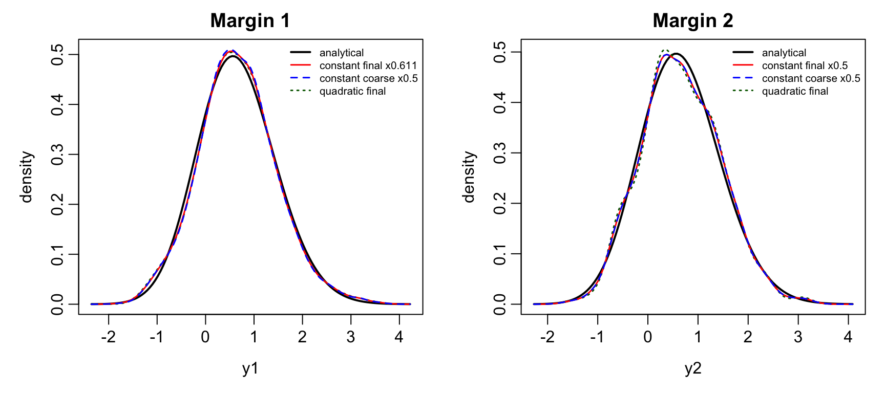
old_par <- par(mfrow = c(2, 3), mar = c(3, 2, 2, 1), mgp = c(2, 0.5, 0))
plot_local_constant_pair(lc_main$z_grid, lc_main$z_grid, true_z, lc_main$joint_fit$density,
c("True SUN, normal scale", "Local constant, normal scale"))
plot_local_constant_pair(lc_main$u_grid, lc_main$u_grid, true_c, lc_main$copula_density,
c("True copula", "Local-constant copula estimate"))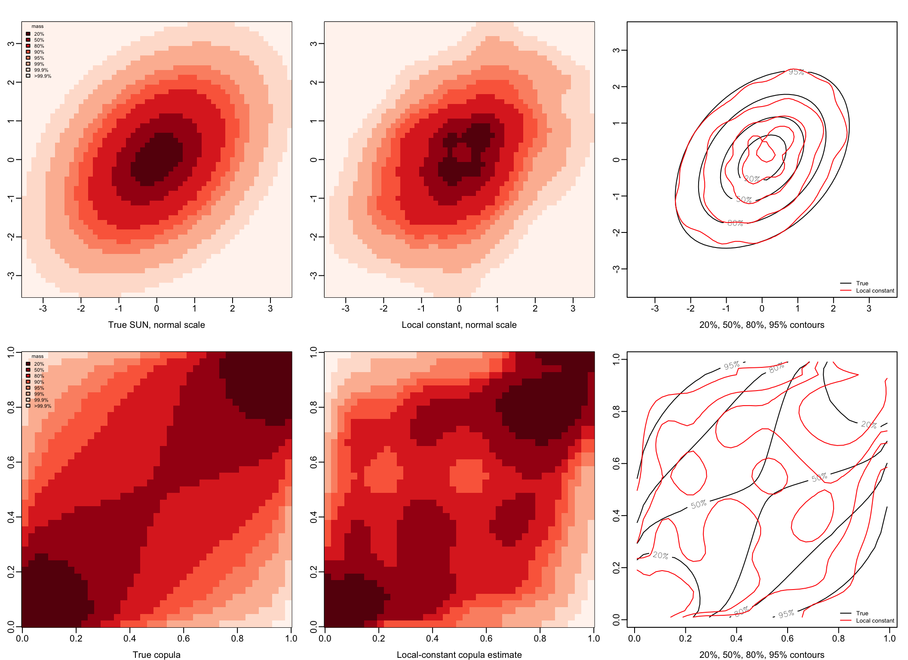
par(old_par)old_par <- par(mfrow = c(1, 3), mar = c(3, 2, 2, 1), mgp = c(2, 0.5, 0))
plot_local_constant_pair(lc_main$original_grid$x, lc_main$original_grid$y,
sun_density, lc_main$rebuilt_density, c("True SUN joint density", "Local-constant reconstruction"))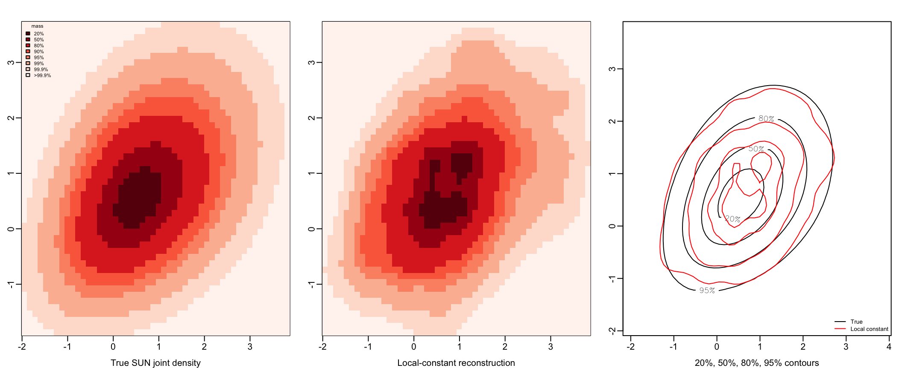
par(old_par)Light censoring: local constant
knitr::kable(local_constant_bandwidth_table(lc_light), digits = 3,
caption = "Local-constant light-censoring analysis: coarse and final multipliers, selected bandwidths, and final-fit convergence.")| Component | Coarse | Final | Bandwidth | CV_loglik | Converged | Iterations |
|---|---|---|---|---|---|---|
| Margin 1 | 1 | 0.8333 | 0.1385 | -8828.400 | TRUE | 6 |
| Margin 2 | 1 | 1 | 0.1646 | -8732.922 | TRUE | 6 |
| Normal coordinates 1, 2 | 0.5, 0.5 | 0.5, 0.5 | 0.1258, 0.1249 | -14088.412 | TRUE | 10 |
plot_local_constant_marginals(lc_light, ems_marginals_light, marg_dp_light)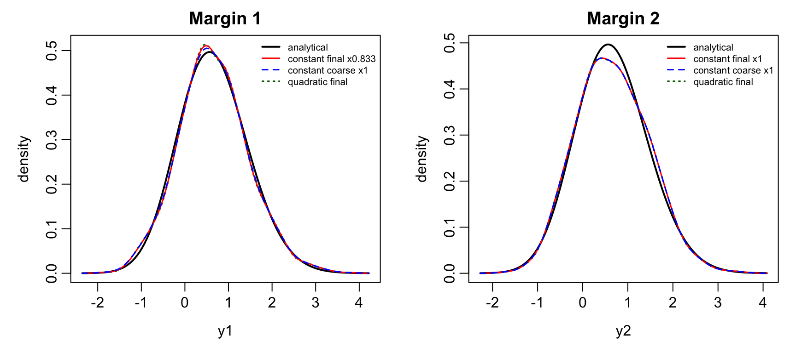
old_par <- par(mfrow = c(2, 3), mar = c(3, 2, 2, 1), mgp = c(2, 0.5, 0))
plot_local_constant_pair(lc_light$z_grid, lc_light$z_grid, true_z_light, lc_light$joint_fit$density,
c("True SUN, normal scale", "Local constant, normal scale"))
plot_local_constant_pair(lc_light$u_grid, lc_light$u_grid, true_c_light, lc_light$copula_density,
c("True copula", "Local-constant copula estimate"))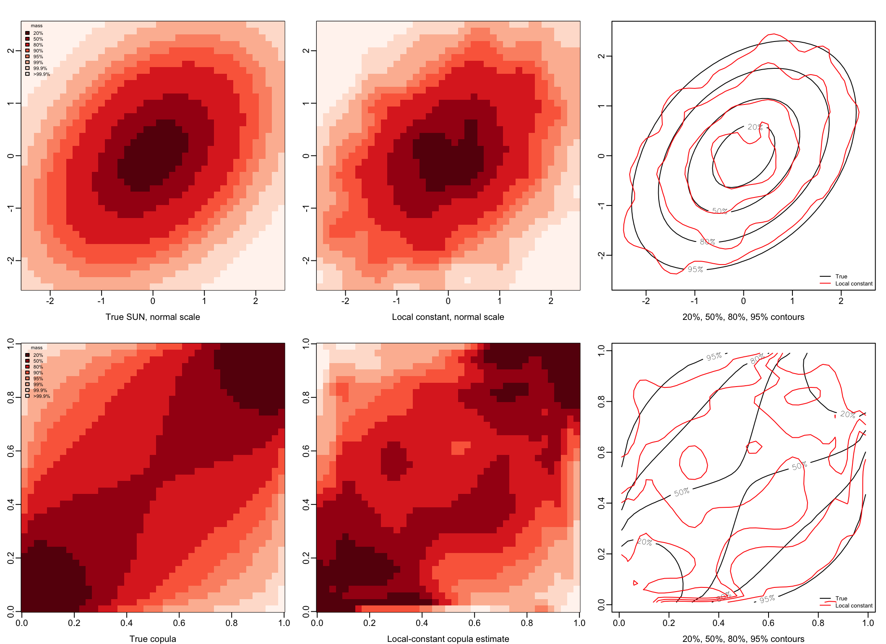
par(old_par)old_par <- par(mfrow = c(1, 3), mar = c(3, 2, 2, 1), mgp = c(2, 0.5, 0))
plot_local_constant_pair(lc_light$original_grid$x, lc_light$original_grid$y,
sun_density, lc_light$rebuilt_density, c("True SUN joint density", "Local-constant reconstruction"))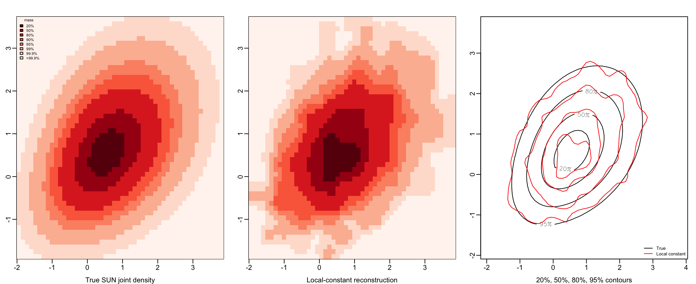
par(old_par)Local log-quadratic estimation following Fan et al. (2011)
This section follows the same order as the preceding analyses: estimate the two marginals, transform the censoring intervals to normal scores, estimate dependence there, and reconstruct the joint density. Each density fit uses a local log-quadratic extension of the local-likelihood framework in Fan, Stafford and Brown (2011). Gaussian kernels give an analytic local-likelihood solution. The marginal fits are separate one-dimensional models; they are not obtained by integrating a bivariate fit.
Heavy, intermediate, and light censoring each use all 4,000 observations. As above, the heavy marginal intervals have rounding step \(0.02\), and its dependence intervals have rounding step \(0.2\). The intermediate case uses one-half exponential half-widths and rounding step \(0.1\) for both stages. The light case uses one-quarter exponential half-widths and rounding step \(0.05\) for both stages. The interval draws are paired across all three censoring cases using the same seed. The intermediate case is included only in these Fan comparisons. True SUN parameters and latent observations are used for simulation and reference densities, not for fitting or selecting bandwidths.
1. Estimate the marginal densities
For each margin \(j\), Fan’s local model is
\[ \lambda_j(u;\mathbf a,s) =\exp\{a_1+a_2(u-s)+a_3(u-s)^2\}. \]
Given current cell probabilities \(\Lambda_\ell^{(r)}\), the conditional allocation is
\[ M_\ell^{(r)}=\frac1n\sum_{i=1}^n \frac{\Lambda_\ell^{(r)}\mathcal I_{i\ell}} {\sum_m\Lambda_m^{(r)}\mathcal I_{im}},\qquad q^{(r)}(u)=\frac{M_\ell^{(r)}}{|Q_\ell|}\quad(u\in Q_\ell). \]
This is the EM allocation in Braun and Stafford’s equation (5). Fan et al.’s density-estimation expected local likelihood, equation (2.9), then fits the log-quadratic polynomial \(\mathcal P\) by maximizing
\[ \widetilde\ell_s(\mathbf a) =n\int K_h(u-s)q^{(r)}(u)\mathcal P(u-s;\mathbf a)\,du -n\int K_h(u-s)\exp\{\mathcal P(u-s;\mathbf a)\}\,du. \]
With a Gaussian kernel, let \(t=(u-s)/h\) and define the local kernel mass \(s_0=\int K_h(u-s)q^{(r)}(u)\,du\), weighted mean \(\mu\), and weighted variance \(v\) of \(t\). Matching these moments solves the three score equations and gives
\[ f_{j,\mathrm{raw}}(s)=\exp\{\widehat a_1(s)\} =\frac{s_0}{\sqrt v}\exp\left(-\frac{\mu^2}{2v}\right). \]
The final smooth marginal density is \(\widehat f_j=f_{j,\mathrm{raw}}/\int_{D_j}f_{j,\mathrm{raw}}\), normalized over its padded computational interval \(D_j\). Its CDF \(\widehat F_j\) is computed by integrating that same smooth density. Cells provide the numerical conditional-allocation approximation; the plotted density evaluates the fitted local intercept directly.
Each marginal bandwidth uses ten-fold CV. The coarse multipliers are \(0.5,1,2,3,4,5,8\); ten equally spaced candidates within one unit of the coarse winner form the refinement stage, with a lower bound of \(0.5\). The final winner is selected across both stages using identical folds. The marginal figures show the final fit in red, the best coarse fit in dashed blue, and the analytical SUN marginal in black.
source("R/fan_local_em.R")
source("R/fan_smooth.R")
source("R/fan_marginal.R")
source("R/fan_copula.R")# Half-width scale 0.5 lies between heavy (1) and light (0.25) censoring.
# Use the same observations and exponential draws for the paired comparison.
censored_Y_intermediate <- simulate_exponential_interval_censoring(
ysim2,
seed = 20260626,
round = 0.1,
width_scale = 0.5
)
censored_Y_intermediate_biv <- censored_Y_intermediate
fan_interval_widths <- do.call(rbind, lapply(list(
Heavy = censored_Y,
Intermediate = censored_Y_intermediate,
Light = censored_Y_light
), function(data) colMeans(data$right - data$left)))
colnames(fan_interval_widths) <- c("Mean interval width Y1", "Mean interval width Y2")
knitr::kable(fan_interval_widths, digits = 4,
caption = "Mean original-scale marginal interval widths for the three paired Fan censoring cases.")| Mean interval width Y1 | Mean interval width Y2 | |
|---|---|---|
| Heavy | 1.6366 | 1.6577 |
| Intermediate | 0.9073 | 0.9176 |
| Light | 0.4535 | 0.4597 |
local({
interval_cases <- list(
Heavy = censored_Y,
Intermediate = censored_Y_intermediate,
Light = censored_Y_light
)
observation_ids <- seq_len(min(15L, nrow(ysim2)))
positions <- rev(seq_along(observation_ids))
case_colours <- c(Heavy = "#7662A3", Intermediate = "#CA7B24", Light = "#268681")
old_par <- par(mfrow = c(3, 2), mar = c(3.4, 4, 2.3, 1),
mgp = c(2.2, 0.6, 0), cex = 1)
for (case in names(interval_cases)) {
data <- interval_cases[[case]]
for (j in seq_len(2L)) {
left <- data$left[observation_ids, j]
right <- data$right[observation_ids, j]
plot(c(-2, 4), range(positions) + c(-0.7, 0.7),
type = "n", axes = FALSE, xlim = c(-2, 4), xaxs = "i",
xlab = bquote(Y[.(j)]), ylab = "Observation ID",
main = paste0(case, " censoring: Y", j), cex.main = 0.95)
abline(h = positions, col = "grey93", lwd = 0.8)
segments(left, positions, right, positions,
col = case_colours[case], lwd = 2)
segments(left, positions - 0.13, left, positions + 0.13,
col = case_colours[case], lwd = 1.2)
segments(right, positions - 0.13, right, positions + 0.13,
col = case_colours[case], lwd = 1.2)
points(ysim2[observation_ids, j], positions, pch = 16, cex = 0.65)
axis(1, cex.axis = 0.8)
axis(2, at = positions, labels = observation_ids,
las = 1, cex.axis = 0.65, tick = FALSE)
box(bty = "l", col = "grey65")
}
}
par(old_par)
})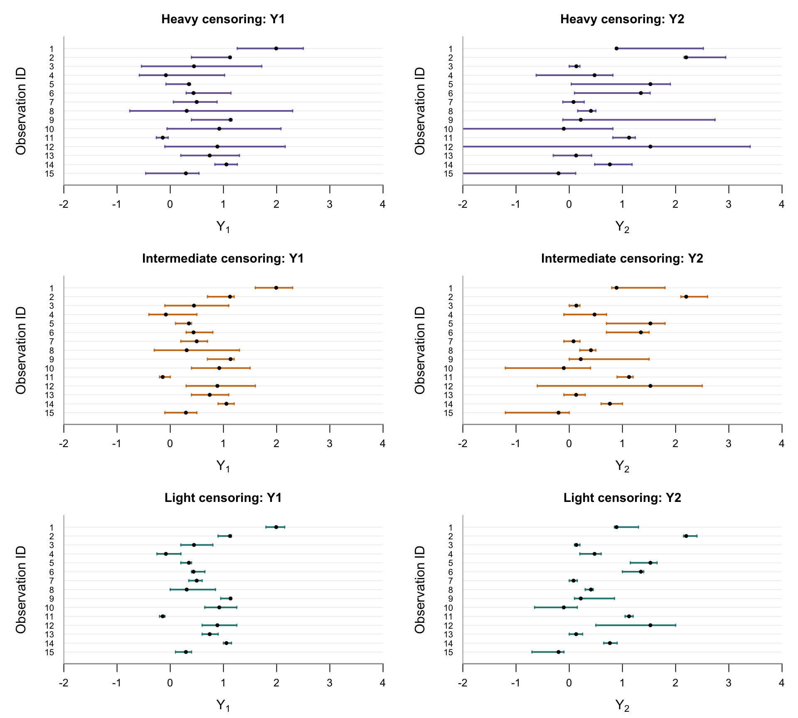
fan_marginal_data <- list(
Heavy = censored_Y,
Intermediate = censored_Y_intermediate,
Light = censored_Y_light
)
fan_marginal_results <- lapply(fan_marginal_data, fit_fan_marginals,
n_folds = 10L, seed = 20260626L, maxit = 200L, tol = 1e-6)fan_marginal_selection <- do.call(rbind, lapply(names(fan_marginal_results), function(case) {
result <- fan_marginal_results[[case]]
do.call(rbind, lapply(seq_len(2L), function(j) {
cv <- result$cv[[j]]
coarse <- result$coarse_best[[j]]
data.frame(censoring = case, margin = j, observations = result$n,
coarse_multiplier = coarse$multiplier, coarse_h = coarse$h,
final_multiplier = cv$best_multiplier, final_h = cv$best_h,
coarse_CV_loglik = coarse$total_holdout_loglik,
final_CV_loglik = cv$best$total_holdout_loglik)
}))
}))
knitr::kable(fan_marginal_selection[
, c("censoring", "margin", "observations", "coarse_multiplier", "coarse_h",
"final_multiplier", "final_h")
], digits = 5, row.names = FALSE,
col.names = c("Censoring", "Margin", "Observations", "Coarse multiplier", "Coarse h",
"Final multiplier", "Final h"),
caption = "Separately fitted Fan marginals: coarse and final bandwidth selections. Only this one-dimensional stage refines the bandwidth search.")| Censoring | Margin | Observations | Coarse multiplier | Coarse h | Final multiplier | Final h |
|---|---|---|---|---|---|---|
| Heavy | 1 | 4000 | 3 | 0.59708 | 2.44444 | 0.48651 |
| Heavy | 2 | 4000 | 3 | 0.59065 | 3.33333 | 0.65627 |
| Intermediate | 1 | 4000 | 3 | 0.51987 | 3.11111 | 0.53913 |
| Intermediate | 2 | 4000 | 3 | 0.51362 | 2.66667 | 0.45655 |
| Light | 1 | 4000 | 4 | 0.66485 | 3.66667 | 0.60945 |
| Light | 2 | 4000 | 4 | 0.65824 | 3.44444 | 0.56682 |
knitr::kable(fan_marginal_selection[
, c("censoring", "margin", "coarse_CV_loglik", "final_CV_loglik")
], digits = 3, row.names = FALSE,
col.names = c("Censoring", "Margin", "Coarse-winner CV log-likelihood",
"Final-winner CV log-likelihood"),
caption = "Ten-fold interval likelihood for the marginal bandwidth winners. Scores compare candidates within the same censoring case and margin.")| Censoring | Margin | Coarse-winner CV log-likelihood | Final-winner CV log-likelihood |
|---|---|---|---|
| Heavy | 1 | -4528.176 | -4527.999 |
| Heavy | 2 | -4430.460 | -4430.431 |
| Intermediate | 1 | -6195.957 | -6195.939 |
| Intermediate | 2 | -6113.249 | -6113.224 |
| Light | 1 | -8825.291 | -8825.242 |
| Light | 2 | -8729.638 | -8729.543 |
2. Transform the intervals and estimate dependence
The separately fitted marginal CDFs map each observed rectangle to
\[ Z_{ij}^L=\Phi^{-1}\{\widehat F_j(L_{ij})\},\qquad Z_{ij}^R=\Phi^{-1}\{\widehat F_j(R_{ij})\}. \]
Numerically, the probabilities are limited to \([10^{-6},1-10^{-6}]\) before applying \(\Phi^{-1}\), and the transformed endpoints are rounded outward with spacing \(0.2\). The marginal transformations remain fixed during dependence bandwidth CV. The bivariate fit therefore uses only the transformed censoring rectangles; its true-density reference uses the true SUN marginal map, as in the preceding sections.
Fan’s bivariate local model on this normal-score scale uses the full polynomial
\[ \mathcal P(t;\mathbf a) =a_1+a_2t_1+a_3t_2+a_4t_1^2+a_5t_1t_2+a_6t_2^2. \]
The same conditional allocation and expected local likelihood apply in two dimensions. For standardized Gaussian-kernel coordinates \(t=H^{-1}(u-s)\), let \(s_0\) be the conditional kernel mass and let \(\mu,V\) be its weighted mean vector and covariance matrix. The fitted intercept is
\[ g_{\mathrm{raw}}(s)=\exp\{\widehat a_1(s)\} =\frac{s_0}{\sqrt{\det V}}\exp\left(-\frac12\mu^\top V^{-1}\mu\right). \]
Equivalently, Fan’s intercept score divides the conditional-kernel numerator by \(\Psi(s;\widehat{\mathbf a}_{-1})=n\int K_h(u-s)\exp\{\mathcal P(u-s;\widehat{\mathbf a}_{-1})\}\,du\), with the intercept replaced by zero in \(\mathbf a_{-1}\). This is the log-quadratic counterpart of Braun and Stafford’s equation (6).
The bivariate density \(\widehat g\) is the smooth intercept normalized once over its padded normal-score domain. Source-cell Gaussian moments include the interaction term, and target-cell integration supplies the next EM probabilities. The plotted normal-score density evaluates the smooth intercept directly. Gaussian product-kernel bandwidths have one pilot scale per normal coordinate, estimated from transformed observation midpoints. Five-fold CV searches the common multipliers \(1,4,8,10,12\) applied to both pilot scales, with no bivariate bandwidth refinement. Held-out rectangle probabilities use the numerical fitted-cell approximation. CV scores compare candidates within the same censoring case; they do not compare different censoring severities.
fan_joint_data <- list(
Heavy = censored_Y_biv,
Intermediate = censored_Y_intermediate_biv,
Light = censored_Y_light_biv
)
fan_cases <- lapply(names(fan_joint_data), function(case) {
fit_fan_copula_case(fan_marginal_results[[case]], fan_joint_data[[case]],
multipliers = c(1, 4, 8, 10, 12), n_folds = 5L,
seed = 20260626L, maxit = 200L, tol = 1e-6, round = 0.2, eps = 1e-6)
})
names(fan_cases) <- names(fan_joint_data)fan_cv_table <- do.call(rbind, lapply(names(fan_cases), function(case) {
result <- fan_cases[[case]]
tab <- result$cv$summary
data.frame(censoring = case, multiplier = result$multipliers[tab$candidate],
h1 = tab$h1, h2 = tab$h2, holdout_loglik = tab$score,
converged_folds = tab$converged_folds,
selected = tab$candidate == result$cv$best_candidate)
}))
knitr::kable(fan_cv_table, digits = 4, row.names = FALSE,
col.names = c("Censoring", "Multiplier", "Normal h1", "Normal h2",
"CV log-likelihood", "Converged folds", "Selected"),
caption = "Fan dependence fit on transformed intervals: fixed-grid five-fold rectangle CV, conditional on the separately fitted marginal transformations. No bivariate refinement is performed.")| Censoring | Multiplier | Normal h1 | Normal h2 | CV log-likelihood | Converged folds | Selected |
|---|---|---|---|---|---|---|
| Heavy | 1 | 0.3085 | 0.3110 | -6542.686 | 5 | FALSE |
| Heavy | 4 | 1.2338 | 1.2442 | -6542.084 | 5 | FALSE |
| Heavy | 8 | 2.4676 | 2.4883 | -6540.582 | 5 | FALSE |
| Heavy | 10 | 3.0845 | 3.1104 | -6540.416 | 5 | FALSE |
| Heavy | 12 | 3.7014 | 3.7325 | -6540.328 | 5 | TRUE |
| Intermediate | 1 | 0.2687 | 0.2703 | -10335.061 | 5 | FALSE |
| Intermediate | 4 | 1.0749 | 1.0811 | -10305.491 | 5 | FALSE |
| Intermediate | 8 | 2.1498 | 2.1622 | -10301.931 | 5 | FALSE |
| Intermediate | 10 | 2.6873 | 2.7027 | -10301.492 | 5 | FALSE |
| Intermediate | 12 | 3.2247 | 3.2433 | -10301.253 | 5 | TRUE |
| Light | 1 | 0.2553 | 0.2562 | -14189.931 | 5 | FALSE |
| Light | 4 | 1.0210 | 1.0250 | -14143.363 | 5 | FALSE |
| Light | 8 | 2.0421 | 2.0500 | -14137.284 | 5 | FALSE |
| Light | 10 | 2.5526 | 2.5625 | -14136.598 | 5 | FALSE |
| Light | 12 | 3.0631 | 3.0750 | -14136.233 | 5 | TRUE |
3. Form the copula and reconstruct the joint density
The fitted normal-score density gives
\[ \widehat c(u_1,u_2) =\frac{\widehat g\{\Phi^{-1}(u_1),\Phi^{-1}(u_2)\}} {\phi\{\Phi^{-1}(u_1)\}\phi\{\Phi^{-1}(u_2)\}}, \]
and the original-scale joint density is reconstructed as
\[ \widehat f_Y(y_1,y_2) =\widehat c\{\widehat F_1(y_1),\widehat F_2(y_2)\} \widehat f_1(y_1)\widehat f_2(y_2). \]
This uses the one-dimensional Fan marginals fitted in the first stage. The normal-score transformation alone does not force \(\widehat g\) to have exactly standard-normal margins, so the transformed \(\widehat c\) need not have exactly uniform margins. Consequently, the reconstructed joint density need not reproduce the supplied marginal curves exactly. No marginal balancing is applied.
fan_eval_edges_x <- seq(min(ysim2[, 1L]), max(ysim2[, 1L]), length.out = 121L)
fan_eval_edges_y <- seq(min(ysim2[, 2L]), max(ysim2[, 2L]), length.out = 121L)
fan_eval_x <- head(fan_eval_edges_x, -1L) + diff(fan_eval_edges_x) / 2
fan_eval_y <- head(fan_eval_edges_y, -1L) + diff(fan_eval_edges_y) / 2
fan_eval_area <- diff(fan_eval_edges_x)[1L] * diff(fan_eval_edges_y)[1L]
fan_truth <- matrix(sn::dsun(as.matrix(expand.grid(fan_eval_x, fan_eval_y)),
dp = my_sun_params), nrow = length(fan_eval_x))
fan_estimates <- lapply(fan_cases, fan_copula_joint_grid,
x = fan_eval_x, y = fan_eval_y)
fan_display <- list(
Heavy = list(z = zg, u = ug, true_z = true_z, true_c = true_c,
marginal_params = marg_dp),
Intermediate = list(z = zg, u = ug, true_z = true_z, true_c = true_c,
marginal_params = marg_dp),
Light = list(z = zg_light, u = ug_light, true_z = true_z_light,
true_c = true_c_light, marginal_params = marg_dp_light)
)
for (case in names(fan_display)) {
display <- fan_display[[case]]
fan_display[[case]]$normal_density <- fan_smooth_grid(
fan_cases[[case]]$normal_model, display$z, display$z)
fan_display[[case]]$copula_density <- fan_copula_grid(
fan_cases[[case]], display$u, display$u)
}
fan_comparison <- do.call(rbind, lapply(names(fan_cases), function(case) {
result <- fan_cases[[case]]
estimate <- fan_estimates[[case]]
data.frame(censoring = case, observations = result$n,
marginal_h1 = result$margins$cv[[1L]]$best_h,
marginal_h2 = result$margins$cv[[2L]]$best_h,
normal_h1 = result$fit$h[1L], normal_h2 = result$fit$h[2L],
midpoint_L1 = sum(abs(estimate - fan_truth)) * fan_eval_area,
midpoint_ISE = sum((estimate - fan_truth)^2) * fan_eval_area,
displayed_grid_mass = sum(estimate) * fan_eval_area,
search_boundary = result$cv$best_candidate %in% c(1L, length(result$multipliers)))
}))knitr::kable(fan_comparison[
, c("censoring", "observations", "normal_h1", "normal_h2",
"midpoint_L1", "midpoint_ISE", "search_boundary")
], digits = 5, row.names = FALSE,
col.names = c("Censoring", "Observations", "Selected normal h1", "Selected normal h2",
"Joint L1 error", "Joint ISE", "Bivariate search boundary"),
caption = "Reconstructed joint-density accuracy after Fan marginal estimation and normal-score dependence fitting. Errors use the same 120 by 120 original-scale midpoint grid; smaller is better.")| Censoring | Observations | Selected normal h1 | Selected normal h2 | Joint L1 error | Joint ISE | Bivariate search boundary |
|---|---|---|---|---|---|---|
| Heavy | 4000 | 3.70144 | 3.73249 | 0.12192 | 0.00211 | TRUE |
| Intermediate | 4000 | 3.22472 | 3.24325 | 0.06815 | 0.00053 | TRUE |
| Light | 4000 | 3.06309 | 3.07499 | 0.04586 | 0.00024 | TRUE |
fan_saved_cv <- do.call(rbind, lapply(names(fan_marginal_results), function(case) {
do.call(rbind, lapply(seq_len(2L), function(j) {
tab <- fan_marginal_results[[case]]$cv[[j]]$summary
data.frame(censoring = case, component = paste0("Margin ", j),
stage = tab$stage, multiplier = tab$multiplier,
h1 = tab$h, h2 = NA_real_, holdout_loglik = tab$total_holdout_loglik,
converged_folds = tab$converged_folds)
}))
}))
fan_saved_cv <- rbind(fan_saved_cv, data.frame(
censoring = fan_cv_table$censoring, component = "Normal-score dependence",
stage = "fixed", multiplier = fan_cv_table$multiplier,
h1 = fan_cv_table$h1, h2 = fan_cv_table$h2,
holdout_loglik = fan_cv_table$holdout_loglik,
converged_folds = fan_cv_table$converged_folds))
write.csv(fan_comparison, file.path("results", "fan_local_em_comparison.csv"), row.names = FALSE)
write.csv(fan_saved_cv, file.path("results", "fan_local_em_cv.csv"), row.names = FALSE)
saveRDS(list(
method = "Separate Fan marginals, fitted-CDF normal-score intervals, Fan dependence, reconstructed joint",
marginal_results = fan_marginal_results, cases = fan_cases,
marginal_selection = fan_marginal_selection, comparison = fan_comparison,
cv = fan_saved_cv, grid = list(x = fan_eval_x, y = fan_eval_y),
true_density = fan_truth, estimated_densities = fan_estimates
), file.path("results", "fan_local_em_results.rds"))
saveRDS(list(marginal_models = lapply(fan_marginal_results, `[[`, "models"),
coarse_marginal_models = lapply(fan_marginal_results, `[[`, "coarse_models"),
normal_models = lapply(fan_cases, `[[`, "normal_model"),
display = fan_display, original_grid = list(x = fan_eval_x, y = fan_eval_y),
reconstructed_densities = fan_estimates),
file.path("results", "fan_local_em_views.rds"))The reconstructed joint density has approximate \(L^1\) error 0.12192 and ISE 0.00211 under heavy censoring. With intermediate censoring, these are 0.06815 and 0.00053. With light censoring, these are 0.04586 and 0.00024. The errors use one common original-scale display rectangle, with no display-grid renormalization. This is one paired simulated sample; narrower intervals need not improve every realized error after bandwidth selection.
The figures retain the earlier HDR colours and layouts. Their probability bands and contour thresholds refer to each displayed grid’s mass. Each censoring case shows its separately fitted marginals first, then the normal-score and copula densities, and finally the reconstructed original-scale joint density.
plot_fan_density_pair <- function(x, y, truth, estimate, labels) {
cuts <- c(0.2, 0.5, 0.8, 0.9, 0.95, 0.99, 0.999)
cols <- c("#67000d", "#a50f15", "#de2d26", "#fb6a4a",
"#fc9272", "#fcbba1", "#fee0d2", "#fff5f0")
image(x, y, hdr_code(truth, x, y, cuts), col = cols,
zlim = c(0.5, 8.5), xlab = labels[1L], ylab = "")
legend("topleft",
legend = c("20%", "50%", "80%", "90%", "95%", "99%", "99.9%", ">99.9%"),
fill = cols, bty = "n", cex = 0.55, title = "mass")
image(x, y, hdr_code(estimate, x, y, cuts), col = cols,
zlim = c(0.5, 8.5), xlab = labels[2L], ylab = "")
probs <- c(0.2, 0.5, 0.8, 0.95)
true_levels <- vapply(probs, hdr_level, numeric(1), dens = truth, x = x, y = y)
est_levels <- vapply(probs, hdr_level, numeric(1), dens = estimate, x = x, y = y)
plot(range(x), range(y), type = "n",
xlab = "20%, 50%, 80%, 95% contours", ylab = "")
contour(x, y, truth, levels = sort(true_levels),
labels = paste0(100 * probs[order(true_levels)], "%"),
drawlabels = TRUE, labcex = 0.6, col = "black", add = TRUE)
contour(x, y, estimate, levels = sort(est_levels),
drawlabels = FALSE, col = "red", add = TRUE)
legend("bottomright", legend = c("True", "Fan log-quadratic"),
col = c("black", "red"), lty = 1, bty = "n", cex = 0.65)
}
plot_fan_marginals <- function(result, marginal_params, grids) {
old_par <- par(mfrow = c(1, 2), mar = c(4, 4, 2, 1), mgp = c(2.2, 0.6, 0))
on.exit(par(old_par))
for (j in seq_len(2L)) {
x <- seq(min(grids[[j]]), max(grids[[j]]), length.out = 501L)
truth <- as.numeric(sn::dsun(matrix(x, ncol = 1L), dp = marginal_params[[j]]))
estimate <- fan_marginal_density(result$models[[j]], x)
coarse <- fan_marginal_density(result$coarse_models[[j]], x)
plot(x, truth, type = "l", col = "black", lwd = 2,
xlab = paste0("y", j), ylab = "density", main = paste("Margin", j),
ylim = range(c(truth, estimate, coarse), finite = TRUE))
lines(x, estimate, col = "red", lwd = 1.5)
lines(x, coarse, col = "blue", lwd = 1.5, lty = 2)
legend("topright", legend = c("analytical",
paste0("Fan final x", signif(result$cv[[j]]$best_multiplier, 3)),
paste0("Fan coarse x", signif(result$coarse_best[[j]]$multiplier, 3))),
col = c("black", "red", "blue"), lwd = c(2, 1.5, 1.5),
lty = c(1, 1, 2), bty = "n", cex = 0.7)
}
}Heavy censoring: Fan marginals, dependence, and reconstruction
plot_fan_marginals(fan_marginal_results$Heavy, marg_dp, list(grid1, grid2))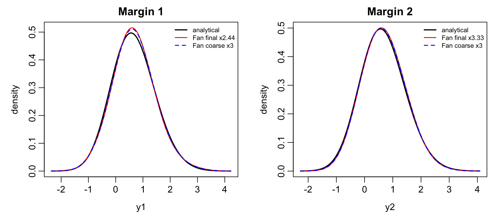
old_par <- par(mfrow = c(2, 3), mar = c(3, 2, 2, 1), mgp = c(2, 0.5, 0))
plot_fan_density_pair(fan_display$Heavy$z, fan_display$Heavy$z,
fan_display$Heavy$true_z, fan_display$Heavy$normal_density,
c("True SUN, normal scale", "Fan, normal scale"))
plot_fan_density_pair(fan_display$Heavy$u, fan_display$Heavy$u,
fan_display$Heavy$true_c, fan_display$Heavy$copula_density,
c("True copula", "Fan copula estimate"))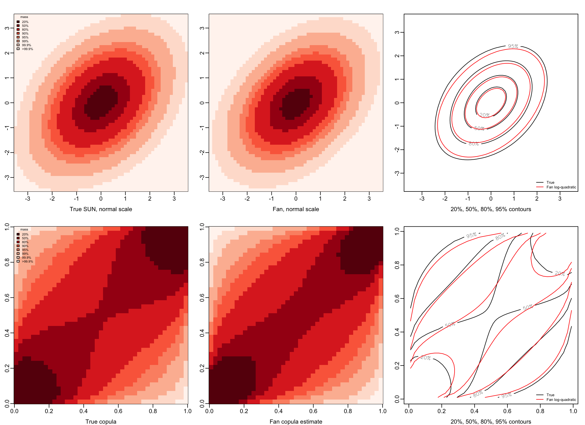
par(old_par)old_par <- par(mfrow = c(1, 3), mar = c(3, 2, 2, 1), mgp = c(2, 0.5, 0))
plot_fan_density_pair(fan_eval_x, fan_eval_y, fan_truth, fan_estimates$Heavy,
c("True SUN joint density", "Fan marginal-copula reconstruction"))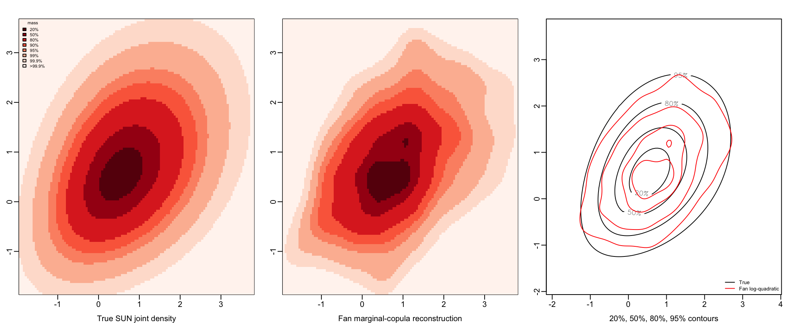
par(old_par)Intermediate censoring: Fan marginals, dependence, and reconstruction
plot_fan_marginals(fan_marginal_results$Intermediate, marg_dp, list(grid1, grid2))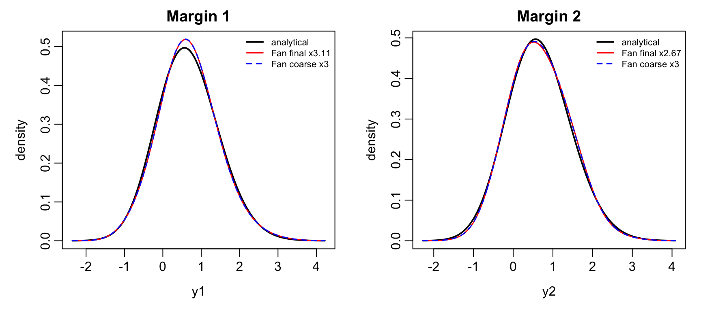
old_par <- par(mfrow = c(2, 3), mar = c(3, 2, 2, 1), mgp = c(2, 0.5, 0))
plot_fan_density_pair(fan_display$Intermediate$z, fan_display$Intermediate$z,
fan_display$Intermediate$true_z, fan_display$Intermediate$normal_density,
c("True SUN, normal scale", "Fan, normal scale"))
plot_fan_density_pair(fan_display$Intermediate$u, fan_display$Intermediate$u,
fan_display$Intermediate$true_c, fan_display$Intermediate$copula_density,
c("True copula", "Fan copula estimate"))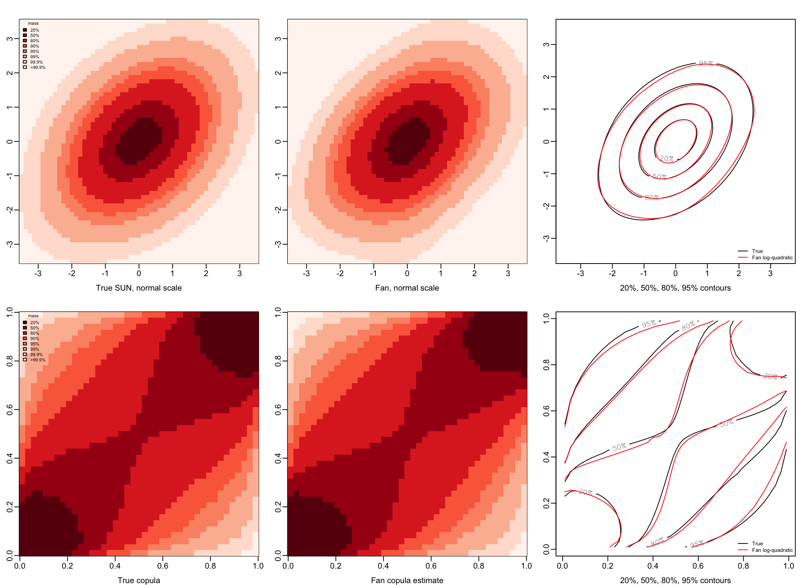
par(old_par)old_par <- par(mfrow = c(1, 3), mar = c(3, 2, 2, 1), mgp = c(2, 0.5, 0))
plot_fan_density_pair(fan_eval_x, fan_eval_y, fan_truth, fan_estimates$Intermediate,
c("True SUN joint density", "Fan marginal-copula reconstruction"))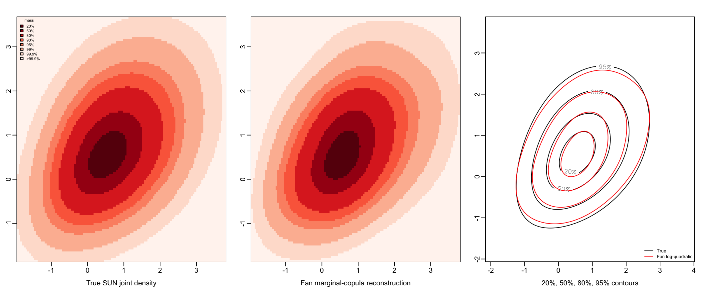
par(old_par)Light censoring: Fan marginals, dependence, and reconstruction
plot_fan_marginals(fan_marginal_results$Light, marg_dp_light, list(grid1, grid2))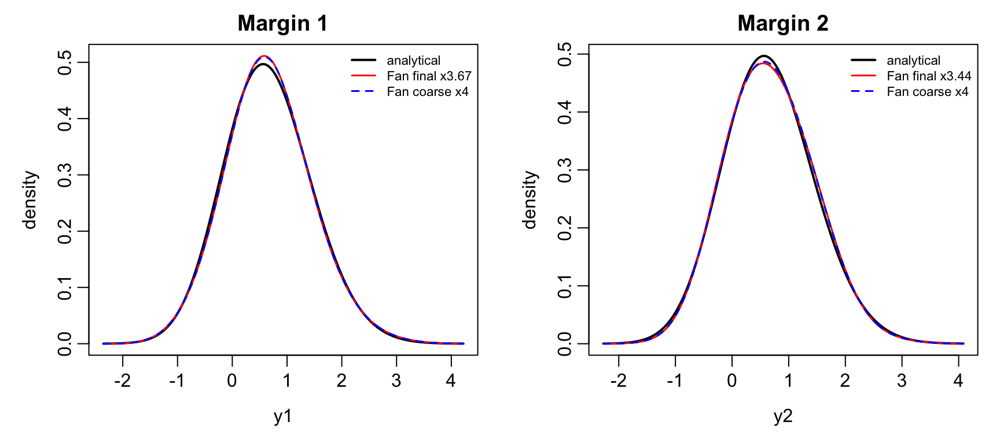
old_par <- par(mfrow = c(2, 3), mar = c(3, 2, 2, 1), mgp = c(2, 0.5, 0))
plot_fan_density_pair(fan_display$Light$z, fan_display$Light$z,
fan_display$Light$true_z, fan_display$Light$normal_density,
c("True SUN, normal scale", "Fan, normal scale"))
plot_fan_density_pair(fan_display$Light$u, fan_display$Light$u,
fan_display$Light$true_c, fan_display$Light$copula_density,
c("True copula", "Fan copula estimate"))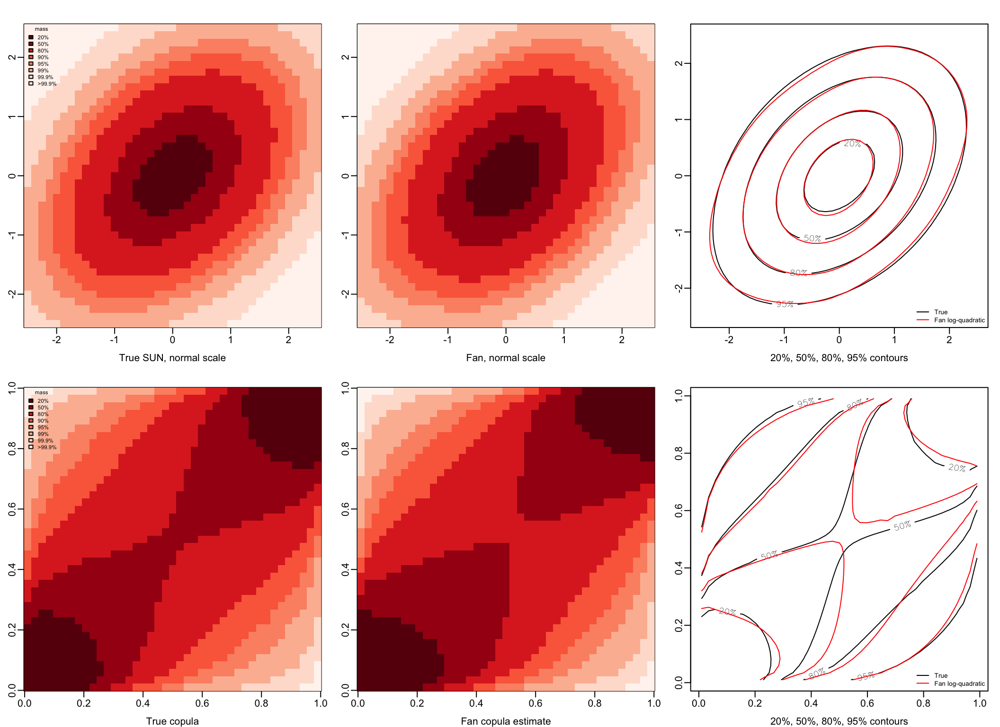
par(old_par)old_par <- par(mfrow = c(1, 3), mar = c(3, 2, 2, 1), mgp = c(2, 0.5, 0))
plot_fan_density_pair(fan_eval_x, fan_eval_y, fan_truth, fan_estimates$Light,
c("True SUN joint density", "Fan marginal-copula reconstruction"))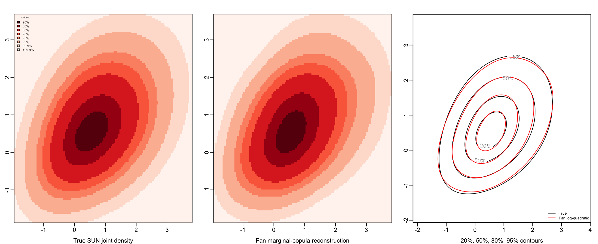
par(old_par)